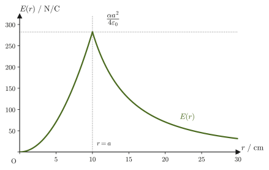
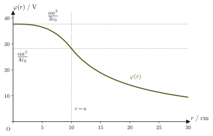
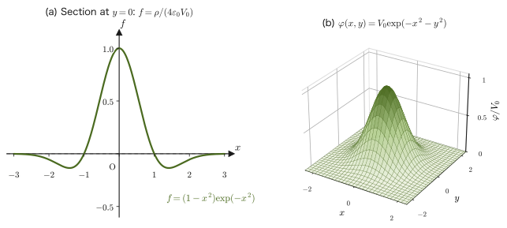

Chapter 36Electric Potential and Capacitors
In the previous chapter (Chapter 35), we found the electric field $\bm E$ around charges by two methods: Coulomb's law and Gauss's law. The electric field is a vector quantity, so at each point we must specify both its magnitude and its direction. But recall what you learned about the “electric potential (voltage)” in high school physics. The electric potential is just a number (a scalar), yet it contains all the information about the electric field—once the potential is known, we can compute the electric field back from it. This mechanism, by which a “quantity with direction (the electric field)” can be produced solely from a “quantity without direction (the electric potential),” is the very subject of this chapter.
In fact, you have already encountered this same mechanism in mechanics. In the field of a conservative force $\bm F$, we could define a single scalar quantity, the potential energy $U$, and recover the force itself through the relation $\bm F=-\nabla U$ (Section 4.4). The electric potential $\varphi$ is nothing other than the “potential energy per unit charge” for the conservative force field that is the electric field. In this chapter we will confirm that the equations you memorized in high school physics as formulas—“$V=Ed$” and “the potential is taken to be $0$ at infinity”—were only very special cases of this general framework.
The most important practical application of the idea of electric potential is a device that stores charge—the capacitor. Capacitors are used in all kinds of electronic devices around us: the touch panels of smartphones, camera flashes, noise removal in electronic circuits, and even every single bit of a computer's semiconductor memory. The quantity called capacitance, which determines the performance of a capacitor, can likewise be found only by means of the potential calculations learned in this chapter.
- The definition of the electric potential $\varphi$; the potential difference (voltage) $V=\varphi_B-\varphi_A=\displaystyle\int_B^A\bm E\cdot\dd\bm r$ (the line integral of the electric field); the relation $W_{BA}=q(\varphi_B-\varphi_A)$ for the work done on a charge by an electrostatic field; and the fact that the potential has an arbitrary additive constant (the choice of the reference point)
- The derivation of the potential $V=Ed$ of a uniform electric field; the potential of a point charge referenced to infinity, $\varphi(r)=\dfrac{1}{4\pi\varepsilon_0}\dfrac{Q}{r}$; and the potential energy $U=\dfrac{1}{4\pi\varepsilon_0}\dfrac{qQ}{r}$
- The capstone of calculating electric fields with Gauss's law—the electric field and potential of an infinite plane, an infinite line, a uniformly charged sphere, and a sphere of density $\rho=\alpha r$, both inside and outside the spheres (Examples 36.4–36.8), and how to choose the reference point when infinity cannot be used (Example 36.6)
- The derivation of the parallel-plate capacitor formula $C=\varepsilon_0S/d$ and of the electrostatic energy $U=\tfrac12CV^2$; the energy density of the electric field $u=\tfrac12\varepsilon_0E^2$
- The capacitance of spherical and cylindrical capacitors, and the relation between the potential and the charge density given by Poisson's equation $\nabla^2\varphi=-\rho/\varepsilon_0$
- The calculation of the potential and electric field produced on the axis by continuously distributed charges such as a ring and a disk, and the potential and electric field of an electric dipole
Source notes: Yasuhide Mochizuki, Physics Notes: Electromagnetism, pp. 7–12.
36.1 Potential Difference and the Work Done by an Electrostatic Field
In high school physics, the electric potential (voltage) was learned as separate formulas—“$V=Ed$ for a uniform electric field” and “$\dfrac{1}{4\pi\varepsilon_0}\dfrac{Q}{r}$ around a point charge”—and the potential energy due to the electrostatic force was likewise written $U=qV$ and $U=\dfrac{1}{4\pi\varepsilon_0}\dfrac{qQ}{r}$. All of these are special cases of one and the same quantity, the “potential energy per $1\,\mathrm C$.” In this section we first state its general definition, and from Section 36.2 onward we rederive these formulas one by one.
Recall the relation between conservative forces and potential energy in mechanics. Under a conservative force $\bm F$, the potential energy $U$ could be defined as “the work done against the force in carrying an object from a reference point to the given position,” and the relation $\bm F=-\nabla U$ (the force points opposite to the gradient of the potential energy) held (Section 4.4). The electrostatic field $\bm E$ is likewise a superposition of fields of central forces arising from Coulomb's law (the electric field produced by a single point charge is a spherically symmetric, radial vector field centered on the charge), and it has exactly the same properties as a conservative force in mechanics: when we regard the electric field as the “force per unit charge,” there necessarily exists a corresponding scalar function (the counterpart of the potential energy per unit charge). We call this the electric potential $\varphi$.
Definition 36.1: Electric potential
For an electric field $\bm E(\bm r)$,
$$ \bm E=-\nabla\varphi $$the scalar function $\varphi(\bm r)$ that satisfies this equation is called the electric potential at that point. Its unit is the volt $[\mathrm V]=[\mathrm{J/C}]$ (a potential difference of $1\,\mathrm V$ corresponds to $1\,\mathrm J$ of work to carry a charge of $1\,\mathrm C$). The symbol $\nabla$ (nabla, or “del”) denotes the operator that forms the gradient vector (University Mathematics, Section 18.4). The minus sign appears for the same reason as in $\bm F=-\nabla U$ in mechanics: it ensures that the force on a positive charge (= the direction of the electric field) points “from higher potential toward lower potential.” That such a $\varphi$ actually exists (that is, that the electrostatic field is a conservative force field) is checked for a point charge in the “Why?” box just below, and is extended to general electrostatic fields by superposition. The general reason will be confirmed again in Section 40.2, where we study electromagnetic induction, as a special case of Faraday's law $\rot\bm E=-\pdiff{\bm B}{t}$ (for a time-independent electrostatic field, the right-hand side is $0$).
The electric potential has an arbitrary additive constant. Adding a constant $c$ to $\varphi$ gives $\varphi+c$, which also satisfies $-\nabla(\varphi+c)=-\nabla\varphi=\bm E$ (the gradient of a constant is $\bm 0$). Therefore the value of the potential itself is fixed only once we decide “where to take $\varphi=0$ as the reference,” and what has physical meaning is the difference between the potentials at two points (the potential difference).
Why?: For the electric field of a point charge, the line integral does not depend on the path taken
The electric field produced by a point charge $Q$ at the origin points in the radial direction, and its magnitude depends only on the distance $r=\abs{\bm r}$: $\bm E=E(r)\,\bm e_r$, $E(r)=\dfrac{1}{4\pi\varepsilon_0}\dfrac{Q}{r^2}$ ($\bm e_r=\bm r/r$ is the unit vector in the radial direction). Taking the small changes of both sides of $r^2=\bm r\cdot\bm r$ gives $2r\,\dd r=2\bm r\cdot\dd\bm r$, so $\dd r=\bm e_r\cdot\dd\bm r$ (the radial component of the small displacement equals the increase $\dd r$ in the distance). Therefore $\bm E\cdot\dd\bm r=E(r)\,\bm e_r\cdot\dd\bm r=E(r)\,\dd r$, and the line integral from point $B$ to point $A$ is
$$ \int_B^A\bm E\cdot\dd\bm r=\int_{r_B}^{r_A}E(r)\,\dd r=\frac{Q}{4\pi\varepsilon_0}\left(\frac1{r_B}-\frac1{r_A}\right) $$which is determined solely by the distances $r_B,r_A$ of the two endpoints (however roundabout the path, the result of summing the $\dd r$ does not change). Setting $\varphi(r)=\dfrac{Q}{4\pi\varepsilon_0r}+(\text{constant})$, this is exactly the difference $\varphi_B-\varphi_A$. The electric field produced by several point charges or by a continuous charge distribution is a superposition of point-charge fields (Chapter 35), and since the line integral of each term is path-independent, so is their sum. Thus we see that an electric potential $\varphi$ exists for a general electrostatic field.
Using the definition of the electric potential, $\bm E=-\nabla\varphi$, we can express the difference between the potentials at two points as a line integral of the electric field. For this purpose, first recall that the change in the scalar field $\varphi$ when the position is moved by a small displacement $\dd\bm r$ (the total differential) can be written as an inner product (dot product) with the gradient vector (University Mathematics, Section 18.4):
$$ \dd\varphi=\nabla\varphi\cdot\dd\bm r $$This is nothing more than the total differential of a multivariable function, $\dd\varphi=\pdiff{\varphi}{x}\dd x+\pdiff{\varphi}{y}\dd y+\pdiff{\varphi}{z}\dd z$, rewritten as the inner product of $\nabla\varphi=\left[\pdiff{\varphi}{x},\pdiff{\varphi}{y},\pdiff{\varphi}{z}\right]$ and $\dd\bm r=[\dd x,\dd y,\dd z]$.
Derivation: The relation between the potential difference and the line integral of the electric field
Integrate the electric field along some path from point $B$ to point $A$. Substituting $\bm E=-\nabla\varphi$ from Definition 36.1, we obtain
$$ \int_B^A\bm E\cdot\dd\bm r=\int_B^A(-\nabla\varphi)\cdot\dd\bm r=-\int_B^A\nabla\varphi\cdot\dd\bm r=-\int_B^A\dd\varphi $$(in the last equality we used $\dd\varphi=\nabla\varphi\cdot\dd\bm r$, confirmed above). The definite integral $\displaystyle\int_B^A\dd\varphi$ adds up $\varphi$ from its value at $B$ to its value at $A$, so it equals $\varphi_A-\varphi_B$ (the multivariable version of the one-variable definite integral $\int_a^b f'(x)\,\dd x=f(b)-f(a)$). Therefore, we obtain
$$ \int_B^A\bm E\cdot\dd\bm r=-(\varphi_A-\varphi_B)=\varphi_B-\varphi_A $$This has the same content as swapping the upper and lower limits and writing $-\displaystyle\int_B^A\dd\varphi=\displaystyle\int_A^B\dd\varphi=\varphi_B-\varphi_A$. Note also that the value of this integral does not change whichever path from $B$ to $A$ we choose (path independence, University Mathematics, Section 20.3). This is a direct consequence of $\bm E$ being a gradient vector field, and it is a special property that does not hold for line integrals of general (not necessarily conservative) vector fields.
∎
Definition 36.2: Potential difference (voltage)
For two points $A,B$, the difference $\varphi_B-\varphi_A$ of their potentials is called the potential difference or the voltage, and in this book it is simply written $V$ when this is clear from the context. By Eq. \eqref{eq:36-potdiff-lineintegral}, the potential difference can be calculated as the line integral of the electric field
$$ \varphi_B-\varphi_A=\int_B^A\bm E\cdot\dd\bm r $$The potential difference is (the potential at the starting point $B$) $-$ (the potential at the arrival point $A$), and it is positive when a positive charge moves from a point of high potential to a point of low potential (as Eq. \eqref{eq:36-work-potdiff} below shows, it equals the work done by the electric field per $1\,\mathrm C$). Since the unit of the potential is $[\mathrm V]=[\mathrm{J/C}]$, the unit of the electric field, $[\mathrm{N/C}]$, can also be written $[\mathrm{V/m}]$ (we check this with numbers in Example 36.1). The quantity you memorized in high school physics under the name “voltage” is precisely this potential difference.
Next, let us consider the work done by an electrostatic field on a charge. When a charge $q$ is in an electric field $\bm E$, the force it experiences is $\bm F=q\bm E$ (the Coulomb force, Chapter 35). The work done on this charge by the electric field while it moves from point $B$ to point $A$ is, according to the definition of work in mechanics (Section 4.1: the inner product of force and displacement summed along the path),
$$ W_{BA}=\int_B^A\bm F\cdot\dd\bm r=q\int_B^A\bm E\cdot\dd\bm r $$Substituting Eq. \eqref{eq:36-potdiff-lineintegral} into this, we obtain
\begin{equation} W_{BA}=q(\varphi_B-\varphi_A) \label{eq:36-work-potdiff} \end{equation}That is, the work done on a charge by an electrostatic field does not depend on the path taken and is determined only by the potential difference between the starting point and the arrival point. When a positive charge $q\gt0$ moves from a point $B$ of high potential to a point $A$ of low potential ($\varphi_B\gt\varphi_A$), we have $W_{BA}\gt0$ and the electric field does positive work—exactly the same structure as that of a mass having positive work done on it by gravity when it falls from a high place to a low place.
Example 36.1: Work received by a charge in a uniform electric field
In a uniform electric field of magnitude $E=2.0\times10^3\ \mathrm{N/C}$, a point charge $q=4.0\ \mu\mathrm C$ moves a distance $d=0.50\ \mathrm m$ in the same direction as the field. (1) Find the potential difference $\varphi_B-\varphi_A$ between the starting point $B$ and the arrival point $A$. (2) Find the work $W_{BA}$ done on the charge by the electric field.
Solution. (1) In a uniform electric field, the potential difference between two points a distance $d$ apart along the direction of the field is $\varphi_B-\varphi_A=Ed$ by Eq. \eqref{eq:36-uniform-V}, which we will derive in Section 36.2 (here we anticipate the result and calculate numerically).
$$ \varphi_B-\varphi_A=Ed=(2.0\times10^3\ \mathrm{N/C})\times(0.50\ \mathrm m)=1.0\times10^3\ \mathrm V $$(Unit check: $\mathrm{N/C}\times\mathrm m=\mathrm{N\cdot m/C}=\mathrm{J/C}=\mathrm V$, which agrees with the unit of the potential difference.)
(2) By Eq. \eqref{eq:36-work-potdiff},
$$ W_{BA}=q(\varphi_B-\varphi_A)=(4.0\times10^{-6}\ \mathrm C)\times(1.0\times10^3\ \mathrm V)=4.0\times10^{-3}\ \mathrm J=4.0\ \mathrm{mJ} $$(Unit check: $\mathrm{C\cdot V}=\mathrm{C\cdot(J/C)}=\mathrm J$.)
36.2 The Potential of a Uniform Electric Field and the Potential Referenced to Infinity
Let us apply the definition of the potential difference (Eq. \eqref{eq:36-potdiff-lineintegral}) to electric fields of specific forms and carry out the calculation. As the simplest case, we first consider a uniform electric field, whose magnitude $E$ is constant and whose direction does not change.
If we place a positive charge $q\,[\mathrm C]$ (with $q\gt0$) in a uniform electric field of magnitude $E\,[\mathrm{N/C}]$, this charge experiences a force of magnitude $qE$ in the direction of the field. Suppose we move the charge, in the same direction as the force, along the field direction from point $B$ over a distance $d$ to point $A$. By the definition of work in mechanics (since the force and the displacement point in the same direction, work = magnitude of the force × distance moved; Section 4.1), the work done by the electric field is
$$ W_{BA}=qE\cdot d $$On the other hand, by Eq. \eqref{eq:36-work-potdiff}, this work can also be written in terms of the potential difference as $W_{BA}=q(\varphi_B-\varphi_A)=qV$ (where we have put $V\equiv\varphi_B-\varphi_A$). Since we have merely expressed the same work in two ways, the two expressions are equal:
$$ qEd=qV\qquad\therefore\ V=Ed $$Formula 36.1: Potential difference in a uniform electric field
The potential difference between two points at distance $d$ from each other along the direction of a uniform electric field of magnitude $E$ is
\begin{equation} V=Ed \label{eq:36-uniform-V} \end{equation}This is exactly the formula memorized in high school physics as “capacitor voltage $V$, plate spacing $d$, electric field $E=V/d$,” and we will use it again in the discussion of the parallel-plate capacitor in Section 36.6 of this chapter. In addition, this relation shows that the unit of the electric field may be written as $[\mathrm{V/m}]$ (potential difference ÷ distance) as well as $[\mathrm{N/C}]$. In practice, $[\mathrm{V/m}]$ is more often used to express the magnitude of an electric field.
Next, let us find the potential of a nonuniform electric field—in particular, the Coulomb field produced around a point charge. By Coulomb's law (Chapter 35), the magnitude of the electric field at a point at distance $r$ from a point charge $Q$ placed at the origin is $E(r)=\dfrac{1}{4\pi\varepsilon_0}\dfrac{Q}{r^2}$, and its direction, if $Q\gt0$, is the direction pointing away from the origin (the direction of the unit vector $\bm e_r$ in the radial direction). This electric field decreases rapidly with distance as $1/r^2$, and $\displaystyle\int_r^\infty E\,\dd r$ converges to a finite value (we will actually calculate it later). We therefore take infinity as the reference point of the potential ($\varphi_\infty=0$). (If the charge extends out to infinity, this integral diverges and infinity cannot be used as the reference. We examine such an example in Example 36.6 of Section 36.4.)
Derivation: The potential at a point at distance $r$ from a point charge
In Eq. \eqref{eq:36-potdiff-lineintegral}, put $B=\infty$ (infinity) and let $A$ be a point at distance $r$ from the origin. Then
$$ \int_\infty^A\bm E\cdot\dd\bm r=\varphi_\infty-\varphi_A=-\varphi_A $$(we used $\varphi_\infty=0$). Therefore $\varphi_A=-\displaystyle\int_\infty^A\bm E\cdot\dd\bm r$. As the path of integration, we take the path that approaches $A$ from infinity along a straight line (in the radial direction)—since the potential does not depend on the path, any path gives the same value (as we confirmed in the “Why?” box in Section 36.1). On this path the electric field vector $\bm E$ points along the tangent to the path (the radial direction), so the inner product $\bm E\cdot\dd\bm r$ equals $E(r')\,\dd r'$ (here $r'$ is the integration variable representing the distance of each point on the path from the origin, and $r'=r$ at the point $A$):
$$ \varphi(r)=-\int_{r'=\infty}^{r'=r}E(r')\,\dd r'=-\int_\infty^r\frac{1}{4\pi\varepsilon_0}\frac{Q}{r'^2}\,\dd r' $$Using the fact that an antiderivative of $\dfrac{1}{r'^2}$ is $-\dfrac{1}{r'}$ (that is, $\dd(-1/r')/\dd r'=1/r'^2$), we obtain
$$ \varphi(r)=-\frac{1}{4\pi\varepsilon_0}\left[-\frac{Q}{r'}\right]_\infty^r=-\frac{1}{4\pi\varepsilon_0}\left(-\frac{Q}{r}-\lim_{c\to\infty}\left(-\frac{Q}{c}\right)\right)=-\frac{1}{4\pi\varepsilon_0}\left(-\frac{Q}{r}-0\right)=\frac{1}{4\pi\varepsilon_0}\frac{Q}{r} $$Here we used the fact that $Q/c\to0$ as $c\to\infty$.
∎
Formula 36.2: Potential of a point charge referenced to infinity
The potential at a point at distance $r$ from a point charge $Q$ placed at the origin (referenced to infinity, $\varphi_\infty=0$) is
\begin{equation} \varphi(r)=\frac{1}{4\pi\varepsilon_0}\frac{Q}{r} \label{eq:36-point-charge-potential} \end{equation}Compared with the electric field of Coulomb's law, $E(r)=\dfrac{1}{4\pi\varepsilon_0}\dfrac{Q}{r^2}$, there is a difference: the potential is inversely proportional to the first power of the distance, whereas the electric field is inversely proportional to its square. It is helpful to think of it this way: since the potential is a scalar, it carries no directional information, but in exchange it falls off more gently at large distances than the electric field does (when the electric field is integrated with respect to $r$, the power is lowered by one, as in $\displaystyle\int r^{-2}\dd r=-r^{-1}$).
Caution: Another meaning of the potential $\varphi_A$ (the work of carrying $1\,\mathrm C$ from infinity)
The potential $\varphi(r)$ can also be interpreted as “the work required for an external force to carry a unit charge ($1\,\mathrm C$) at infinity slowly (without using mechanical energy to accelerate it) to point $A$.” The work done on the charge by the electric field is, by Eq. \eqref{eq:36-work-potdiff}, $W_{\infty A}=q(\varphi_\infty-\varphi_A)=-q\varphi_A$, so the work done by the external force is the same with the sign reversed, $-W_{\infty A}=q\varphi_A$. With $q=1\,\mathrm C$, the work done by the external force is exactly equal to $\varphi_A$. For $Q\gt0$, to bring a positive unit charge in from infinity one must do positive work against the repulsive force, which corresponds to $\varphi_A\gt0$.
Example 36.2: Potential around a point charge
For a point charge carrying $Q=2.0\ \mathrm{nC}$ of electric charge, find the potential $\varphi(r_A)$ at a point $A$ at distance $r_A=5.0\ \mathrm{cm}$ from the charge and the potential $\varphi(r_B)$ at a point $B$ at distance $r_B=15\ \mathrm{cm}$, and then find the potential difference $\varphi(r_A)-\varphi(r_B)$. You may use the Coulomb constant $k=\dfrac{1}{4\pi\varepsilon_0}\approx8.99\times10^9\ \mathrm{N\cdot m^2/C^2}$.
Solution. By Eq. \eqref{eq:36-point-charge-potential},
$$ \varphi(r_A)=k\frac{Q}{r_A}=(8.99\times10^9)\times\frac{2.0\times10^{-9}}{5.0\times10^{-2}}\ \mathrm V\approx3.6\times10^2\ \mathrm V $$ $$ \varphi(r_B)=k\frac{Q}{r_B}=(8.99\times10^9)\times\frac{2.0\times10^{-9}}{15\times10^{-2}}\ \mathrm V\approx1.2\times10^2\ \mathrm V $$ $$ \varphi(r_A)-\varphi(r_B)\approx3.6\times10^2-1.2\times10^2=2.4\times10^2\ \mathrm V $$(The potential is higher at $A$ because it is closer to the charge. This corresponds to the fact that positive work must be done from outside to bring a positive charge closer from $B$ to $A$.)
36.3 Potential Energy of a Charge and Electrostatic Induction
In the previous section we saw that a point charge $Q$ at the origin creates a “landscape” around it in the form of the electric potential $\varphi(r)=\dfrac{1}{4\pi\varepsilon_0}\dfrac{Q}{r}$. Now suppose that we place another charge $q$ in this potential. As we confirmed in the Caution at the end of the previous section, the work required to bring the charge $q$ slowly from infinity to a point $A$ (at distance $r$ from the origin) by an external force is $q\varphi(r)$. Recall that in mechanics, the work needed to carry an object against a conservative force became, as it stands, the increase in potential energy (Section 4.4). In the same way, this work is equal to the potential energy acquired by the charge $q$ (with infinity as the reference):
Formula 36.3: Electrostatic potential energy of two point charges
When a charge $q$ is placed at a distance $r$ from a point charge $Q$, the electrostatic potential energy of the pair of charges (with the state in which they are pulled apart to infinity as the reference) is
\begin{equation} U=q\,\varphi(r)=\frac{1}{4\pi\varepsilon_0}\frac{qQ}{r} \label{eq:36-two-charge-pe} \end{equation}This expression is symmetric in $q,Q$ (the same potential energy is obtained whether we fix $q$ and bring $Q$ in from infinity, or fix $Q$ and bring $q$ in from infinity). If $q,Q$ have the same sign (they repel each other), then $U\gt0$—the separated state has lower energy, and the force naturally acts in the direction that pulls them still further apart. If they have opposite signs (they attract each other), then $U\lt0$—the energy decreases the closer they come. In both cases, the relation is the same as for the everyday gravitational potential energy (which is larger the higher up one goes): “the energy decreases in the direction of the force.”
Example 36.3: Electrostatic potential energy of the electron and proton in a hydrogen atom
In Chapter 35, we saw that the Coulomb force between an electron and a proton is about $10^{39}$ times the gravitational attraction between the same two particles. How large, then, is the electrostatic potential energy in an actual hydrogen atom (a model in which the electron and proton are taken to be separated by the Bohr radius $a_0\approx5.29\times10^{-11}\ \mathrm m$)? Calculate it using the elementary charge $e=1.602\,176\,634\times10^{-19}\ \mathrm C$, and give the answer both in the unit $\mathrm J$ and in the unit $\mathrm{eV}$ (the electronvolt, $1\,\mathrm{eV}=e\times1\,\mathrm V=1.602\times10^{-19}\ \mathrm J$), which is commonly used for the energies of atoms and molecules.
Solution. The charge of the electron is $-e$ and that of the proton is $+e$, so setting $q=-e,\ Q=+e,\ r=a_0$ in Eq. \eqref{eq:36-two-charge-pe}, we obtain
$$ U=\frac{1}{4\pi\varepsilon_0}\frac{(-e)(e)}{a_0}=-\frac{1}{4\pi\varepsilon_0}\frac{e^2}{a_0} $$Substituting the numerical values gives
$$ U=-(8.99\times10^9)\times\frac{(1.602\times10^{-19})^2}{5.29\times10^{-11}}\ \mathrm J\approx-4.36\times10^{-18}\ \mathrm J $$Converting to electronvolts gives
$$ U\approx\frac{-4.36\times10^{-18}\ \mathrm J}{1.602\times10^{-19}\ \mathrm{J/eV}}\approx-27.2\ \mathrm{eV} $$The negative sign indicates that the electron and proton attract each other, so energy must be supplied from outside to pull them apart. Interestingly, the ground-state energy of the hydrogen atom obtained from quantum mechanics is known to be $-13.6\ \mathrm{eV}$, which is exactly half of this electrostatic potential energy (in absolute value)—a manifestation of the general property that, under a force of the $1/r$ type such as the Coulomb force, the total energy of a bound state is exactly half of the potential energy (the virial theorem). Even from the classical electrostatics calculation of this chapter alone, one can correctly estimate that the energy scale of atoms is of the order of magnitude of $\mathrm{eV}$.
Finally, let us define electrostatic induction, which was announced in the previous chapter, as a phenomenon, without using the term electric potential.
Definition 36.3: Electrostatic induction
When a positively (or negatively) charged object is brought near an uncharged conductor (metal), the free electrons, which can move freely inside the conductor, experience a force from the electric field created by the charged object and move, so that negative (or positive) charge collects on the conductor's surface on the side near the charged object, and positive (or negative) charge collects on the surface on the far side. This phenomenon is called electrostatic induction.
When electrostatic induction occurs, the free electrons inside the conductor are rearranged in just such a way as to “cancel the electric field inside the conductor,” and in the end the electric field inside the conductor becomes $\bm 0$—this fact (together with the fact that the charge is distributed only on the surface of the conductor) was derived from Gauss's law in Section 35.6. Then, since $\bm E=-\nabla\varphi=\bm 0$ inside the conductor, the electric potential $\varphi$ is constant, independent of position, inside the conductor (an equipotential). Since the surface of the conductor is connected to the interior, the surface is at the same potential, and the whole conductor is a single equipotential. This fact connects consistently with the discussion so far in this chapter, and we will use it in Section 36.7 for the spherical and cylindrical capacitors.
36.4 Calculating Electric Fields with Gauss's Law — The Infinite Plane and the Infinite Line
Gauss's law, which we learned in Chapter 35, states that for an arbitrary closed surface $S$,
$$ \oint_S\bm E\cdot\bm n\,\dd S=\frac{Q_{\text{enc}}}{\varepsilon_0} $$where $Q_{\text{enc}}$ is the total charge enclosed by the closed surface. This law is a general law that holds for a closed surface of any shape, but it can actually be used as a tool for finding the electric field $E$ only when the charge distribution has a high degree of symmetry and we can cleverly choose the closed surface (the Gaussian surface) so that “the magnitude of the electric field is constant and the field is parallel (or perpendicular) to the normal of the closed surface.” Here we treat two typical examples with such symmetry—an infinitely extended charged plane and an infinitely long charged line.
Example 36.4: Electric field of an infinitely wide charged plane
Charge is distributed with uniform surface charge density $\sigma\,[\mathrm{C/m^2}]$ on an infinitely wide flat plate. Find the magnitude of the electric field that this plate creates around it.
Solution. Choose a cylinder (the Gaussian surface) whose axis is perpendicular to the plane, so that it is symmetric about the plane. Let the areas of its top and bottom faces each be $S$ (Figure 36.3). By symmetry, the electric field is perpendicular to the plane (along the axis of the cylinder) and has the same magnitude $E$ on both the top and bottom faces. Moreover, since the electric field points along the axis of the cylinder, it is parallel to the side surface, which is parallel to the axis (perpendicular to the normal vector of the side surface, so that $\bm E\cdot\bm n\,\dd S=0$), and no electric field lines pass through the side surface. Therefore the left-hand side of Gauss's law (the closed-surface integral of the electric field) receives contributions only from the top and bottom faces:
$$ \oint\bm E\cdot\bm n\,\dd S=\underbrace{E\cdot S}_{\text{top}}+\underbrace{E\cdot S}_{\text{bottom}}=2ES $$The $Q_{\text{enc}}$ on the right-hand side is the charge on the part of area $S$ that the cylinder cuts out of the plane, so $Q_{\text{enc}}=\sigma S$. Hence Gauss's law becomes
$$ E\cdot2S=\frac{\sigma S}{\varepsilon_0} $$Since the $S$ on both sides cancel, we obtain
\begin{equation} E=\frac{\sigma}{2\varepsilon_0} \label{eq:36-infinite-plane-E} \end{equation}This does not depend at all on the distance $x$ from the plane—it is a result that runs counter to intuition but follows necessarily from symmetry: the electric field produced by an infinitely wide plane does not weaken no matter how far one moves away from the plane.
Example 36.5: Electric field of an infinitely long charged line
Charge is distributed with uniform linear density $\delta\,[\mathrm{C/m}]$ along an infinitely long straight line. Find the magnitude of the electric field produced around this line, at a point at perpendicular distance $r$ from the line.
Solution. Consider a cylinder (the Gaussian surface) of radius $r$ and length $\ell$ whose axis is the line (Figure 36.4). By symmetry, the electric field is radial with respect to the line (perpendicular to the side surface of the cylinder, along the radial direction) and has the same magnitude $E(r)$ everywhere on the side surface. On the top and bottom faces of the cylinder, the electric field is parallel to the faces (perpendicular to their normals), so there is no component of the field passing through the faces. Therefore the left-hand side of Gauss's law receives contributions only from the side surface. The area of the side surface is the product $2\pi r\ell$ of the circumference $2\pi r$ of the base and the height $\ell$ (the formula for the lateral area of a cylinder), so the left-hand side is
$$ \oint\bm E\cdot\bm n\,\dd S=E(r)\cdot2\pi r\ell $$The $Q_{\text{enc}}$ on the right-hand side is the charge on the part of length $\ell$ that the cylinder cuts out of the line, so $Q_{\text{enc}}=\delta\ell$. Hence,
$$ E(r)\cdot2\pi r\ell=\frac{\delta\ell}{\varepsilon_0} $$Since the $\ell$ on both sides cancel, we obtain
\begin{equation} E(r)=\frac{\delta}{2\pi\varepsilon_0 r} \label{eq:36-infinite-line-E} \end{equation}Unlike the case of the infinite plane (Eq. \eqref{eq:36-infinite-plane-E}), here the field weakens with the distance $r$ (in proportion to $1/r$). Taken together with the facts that the electric field of a point charge goes as $1/r^2$ and that of an infinite plane is independent of $r$ ($1/r^0$), it is worth noticing the pattern: “each time the number of dimensions over which the charge extends increases by one, the distance dependence of the electric field becomes one step weaker.”
Example 36.6: Potentials of the infinite plane and the infinite line—where to place the reference point
For the infinite plane of Example 36.4 ($\sigma\gt0$; at a point at distance $x\,(\gt0)$ from the plane, the magnitude of the electric field is $E=\dfrac{\sigma}{2\varepsilon_0}$ and its direction is away from the plane) and the infinite line of Example 36.5 ($\delta\gt0$; the magnitude of the electric field is $E(r)=\dfrac{\delta}{2\pi\varepsilon_0r}$ and its direction is away from the line), what happens if we try to take infinity as the reference of the electric potential ($\varphi_\infty=0$), as we did for a point charge (Section 36.2)? And what happens to the potential if we take the reference at a finite position?
Solution. (1) Taking infinity as the reference. As in Section 36.2, taking a path that goes to infinity along the direction of the electric field (the direction away from the source), we have $\varphi=-\displaystyle\int_\infty^A\bm E\cdot\dd\bm r=\int_A^\infty E\,\dd r'$ ($r'$ is the distance from the plane or the line). For the plane (let $A$ be the point at distance $x$),
$$ \varphi(x)=\int_x^\infty\frac{\sigma}{2\varepsilon_0}\,\dd x'=\lim_{c\to\infty}\frac{\sigma}{2\varepsilon_0}(c-x)=\infty $$For the line (let $A$ be the point at distance $r$), using $\displaystyle\int\frac{\dd r'}{r'}=\ln r'$,
$$ \varphi(r)=\int_r^\infty\frac{\delta}{2\pi\varepsilon_0r'}\,\dd r'=\frac{\delta}{2\pi\varepsilon_0}\lim_{c\to\infty}\bigl(\ln c-\ln r\bigr)=\infty $$we find that both diverge and no finite value is determined. The cause is that the charge extends to infinity. For a point charge, $E\propto1/r^2$, so the contribution from far away decreases rapidly and $\displaystyle\int^\infty E\,\dd r$ converges; but for the infinite plane $E$ is constant, independent of distance, and for the infinite line $E\propto1/r$ ($\ln r$ grows without bound as $r\to\infty$), so the integral does not converge.
(2) Taking the reference at a finite position. Since the electric potential is a quantity determined up to an arbitrary constant (Section 36.1), we may choose the reference point freely. We use Eq. \eqref{eq:36-potdiff-lineintegral}, $\varphi(B)-\varphi(A)=\displaystyle\int_B^A\bm E\cdot\dd\bm r$, with $B$ the point $x$ (or $r$) and $A$ the reference point. For the plane, taking the reference point on the plane ($x=0$, $\varphi=0$), we obtain
$$ \varphi(x)-0=\int_x^0\frac{\sigma}{2\varepsilon_0}\,\dd x'=-\frac{\sigma}{2\varepsilon_0}\,x\qquad(x\ge0) $$(The potential decreases at a constant rate in the direction of increasing $x$. We get $E=-\dd\varphi/\dd x=\sigma/(2\varepsilon_0)$, in agreement with Example 36.4.) For the line, taking the reference point at a point at distance $r_0$ from the line ($\varphi(r_0)=0$), we obtain
$$ \varphi(r)-0=\int_r^{r_0}\frac{\delta}{2\pi\varepsilon_0r'}\,\dd r'=\frac{\delta}{2\pi\varepsilon_0}\ln\frac{r_0}{r}=-\frac{\delta}{2\pi\varepsilon_0}\ln\frac{r}{r_0} $$(We get $E=-\dd\varphi/\dd r=\dfrac{\delta}{2\pi\varepsilon_0r}$, in agreement with Example 36.5.) Even if the reference point is moved to a different position, only a constant is added to the potential, and neither the electric field nor the potential difference between two points changes.
(Unit check: the unit of $\dfrac{\sigma x}{\varepsilon_0}$ is $\dfrac{(\mathrm{C/m^2})\,\mathrm m}{\mathrm{C^2/(N\,m^2)}}=\mathrm{N\,m/C}=\mathrm V$, and the unit of $\dfrac{\delta}{\varepsilon_0}$ is $\dfrac{\mathrm{C/m}}{\mathrm{C^2/(N\,m^2)}}=\mathrm{N\,m/C}=\mathrm V$; both agree with the unit of electric potential.)
36.5 Electric Field and Potential of a Spherically Symmetric Charge Distribution
In the two examples of the previous section, the charge was distributed on a “surface” or a “line.” Now let us consider the case where the charge is distributed throughout a volume. If the charge density $\rho(\bm r)$ is spherically symmetric (a function only of the distance $r$ from the origin), Gauss's law can be used just as before. We first examine the most basic case, a sphere of constant density (Example 36.7), and then treat a sphere whose density varies in proportion to the distance from the center (Example 36.8).
Example 36.7: Electric field and potential of a uniformly charged sphere
Charge is distributed with uniform density $\rho_0\,[\mathrm{C/m^3}]$ inside a sphere of radius $a$ centered at the origin $O$ (the total charge is $Q=\tfrac43\pi a^3\rho_0$). Assuming that the exterior of the sphere is vacuum, find the electric field $E(r)$ and the electric potential $\varphi(r)$ (with infinity as the reference) at distance $r$ from the center, treating $0\le r\le a$ and $r\gt a$ separately. Also confirm that the electric field and potential outside coincide with those of a point charge obtained by collecting the total charge $Q$ at the single point at the center, and, for $\rho_0=7.5\times10^{-8}\ \mathrm{C/m^3}$ and $a=0.10\ \mathrm m$, find $E(a)$, $\varphi(0)$, and $\varphi(a)$.
Solution (electric field). Take the spherical surface of radius $r$ as the Gaussian surface. By spherical symmetry, the electric field points in the radial direction and has the same magnitude $E(r)$ everywhere on the sphere, so Gauss's law becomes
$$ E(r)\cdot4\pi r^2=\frac{Q(r)}{\varepsilon_0} $$(where $Q(r)$ is the charge inside the sphere of radius $r$).
[1] $0\le r\le a$ (inside the sphere). Since the density is constant, $Q(r)$ is “density × volume of the sphere of radius $r$”: $Q(r)=\rho_0\cdot\tfrac43\pi r^3$ (integrating with the volume element $r'^2\sin\theta\,\dd r'\,\dd\theta\,\dd\phi$ gives the same result: $\rho_0\displaystyle\int_0^r r'^2\dd r'\int_0^\pi\sin\theta\,\dd\theta\int_0^{2\pi}\dd\phi=\rho_0\cdot\dfrac{r^3}{3}\cdot2\cdot2\pi=\tfrac43\pi\rho_0r^3$). Therefore,
$$ E(r)=\frac{Q(r)}{4\pi\varepsilon_0r^2}=\frac{\tfrac43\pi\rho_0r^3}{4\pi\varepsilon_0r^2}=\frac{\rho_0}{3\varepsilon_0}\,r\qquad(0\le r\le a) $$[2] $r\gt a$ (outside the sphere). The charge contained inside the Gaussian surface is all of the charge of the sphere, $Q=\tfrac43\pi a^3\rho_0$, so
$$ E(r)=\frac{Q}{4\pi\varepsilon_0r^2}=\frac{\rho_0a^3}{3\varepsilon_0}\cdot\frac1{r^2}\qquad(r\gt a) $$The electric field outside has the same form as that of a point charge with the total charge $Q$ collected at the center. Moreover, at $r=a$ the inside and outside expressions both give $\dfrac{\rho_0a}{3\varepsilon_0}$, so the electric field joins continuously (the electric field is maximal at the surface of the sphere, $r=a$).
Solution (electric potential). Taking infinity as the reference, we have $\varphi(r)=\displaystyle\int_r^\infty E(r')\,\dd r'$.
[2] For $r\gt a$,
$$ \varphi(r)=\int_r^\infty\frac{\rho_0a^3}{3\varepsilon_0}\frac1{r'^2}\,\dd r'=\frac{\rho_0a^3}{3\varepsilon_0}\left[-\frac1{r'}\right]_r^\infty=\frac{\rho_0a^3}{3\varepsilon_0\,r}=\frac{1}{4\pi\varepsilon_0}\frac{Q}{r}\qquad(r\gt a) $$(In the last equality we used $\dfrac{\rho_0a^3}{3}=\dfrac{Q}{4\pi}$. This agrees with the potential of a point charge, Eq. \eqref{eq:36-point-charge-potential}.)
[1] For $0\le r\le a$, the expression for the electric field switches at $r'=a$, so we split the interval of integration into $[r,a]$ and $[a,\infty)$ (the latter part is exactly the potential outside at $r=a$):
$$ \varphi(r)=\int_r^a\frac{\rho_0}{3\varepsilon_0}\,r'\,\dd r'+\frac{\rho_0a^3}{3\varepsilon_0a}=\frac{\rho_0}{6\varepsilon_0}\left(a^2-r^2\right)+\frac{\rho_0a^2}{3\varepsilon_0}=\frac{\rho_0}{6\varepsilon_0}\left(3a^2-r^2\right)\qquad(0\le r\le a) $$Numerical values. With $\rho_0=7.5\times10^{-8}\ \mathrm{C/m^3}$, $a=0.10\ \mathrm m$, and $\varepsilon_0=8.854\times10^{-12}\ \mathrm{F/m}$, we obtain
$$ E(a)=\frac{\rho_0a}{3\varepsilon_0}\approx2.8\times10^2\ \mathrm{N/C},\qquad \varphi(0)=\frac{\rho_0a^2}{2\varepsilon_0}\approx42.4\ \mathrm V,\qquad \varphi(a)=\frac{\rho_0a^2}{3\varepsilon_0}\approx28.2\ \mathrm V $$(Here we used $\varphi(0)=\dfrac{3a^2\rho_0}{6\varepsilon_0}$ and $\varphi(a)=\dfrac{2a^2\rho_0}{6\varepsilon_0}$. The value $\rho_0=7.5\times10^{-8}\ \mathrm{C/m^3}$ was chosen so that the total charge equals that of the sphere in the next Example 36.8 ($\alpha=1.0\times10^{-6}\ \mathrm{C/m^4}$), $Q=\pi\alpha a^4\approx3.1\times10^{-10}\ \mathrm C$. Dimension check: the unit of $\rho_0r/\varepsilon_0$ is $\dfrac{(\mathrm{C/m^3})\,\mathrm m}{\mathrm{C^2/(N\,m^2)}}=\mathrm{N/C}$, which agrees with the unit of the electric field.)
In high school you learned that the electric field is $0$ inside a spherical conducting shell. The sphere here is one (like an insulator) in which the charge is distributed uniformly throughout the volume, and inside it, because the charge enclosed within radius $r$ increases in proportion to $r^3$, the electric field increases linearly in proportion to $r$ from the center to the surface. Outside, even though the charge is spread over the whole sphere, it cannot be distinguished from a point charge (Figure 36.5).
![Electric field E(r) and electric potential φ(r) of two spherical charge distributions with equal total charge. Left, the electric field: the uniform sphere (blue) increases linearly in proportion to r inside, reaches its maximum value at r=a, and then decreases as 1/r^2. The sphere with density αr (green) increases in proportion to r^2 inside and reaches the same maximum value at r=a. Outside, the two curves coincide. Right, the electric potential: the uniform sphere has its maximum at the center (slightly higher than the green one) and decreases gently, coincides with the green curve at r=a, and decreases as 1/r outside](figs/ch36_fig36-5.svg)
Example 36.8: Electric field and potential of a spherically symmetric charge distribution ($\rho=\alpha r$)
Suppose that charge is distributed inside a sphere of radius $a$ centered at the origin $O$ with density $\rho=\alpha r$ ($\alpha$ is a constant of proportionality; this is a distribution in which the density increases in proportion to the distance $r$ from the center. From the units of $\rho\,[\mathrm{C/m^3}]$ and $r\,[\mathrm m]$, the unit of $\alpha$ is $\mathrm{C/m^4}$). Assuming that the exterior of the sphere is vacuum, find the electric field $E(r)$ and the electric potential $\varphi(r)$ at distance $r$ from the center of the sphere, treating the case $0\le r\le a$ and the case $r\gt a$ separately.
Solution (electric field). Take the spherical surface of radius $r$ as the Gaussian surface. By spherical symmetry, the electric field points in the radial direction and has the same magnitude $E(r)$ everywhere on the sphere, so the left-hand side of Gauss's law (the surface integral) can be written as “magnitude of the electric field × surface area of the sphere,” that is, $E(r)\cdot4\pi r^2$:
$$ E(r)\cdot4\pi r^2=\frac{Q(r)}{\varepsilon_0} $$Here $Q(r)$ is the total amount of charge contained inside the sphere of radius $r$.
[1] $0\le r\le a$ (inside the sphere). To find $Q(r)$, we integrate the charge density $\rho=\alpha r'$ (to distinguish it from the integration variable, we write the radial coordinate of the point of integration as $r'$) over the whole volume of the sphere from radius $0$ to $r$. The volume element in spherical coordinates is $\dd V=r'^2\sin\theta\,\dd r'\,\dd\theta\,\dd\phi$ (University Mathematics, Section 7.7; for the azimuthal angle we use a different letter, $\phi$, so as not to confuse it with the potential $\varphi$), so
$$ Q(r)=\int_0^{2\pi}\!\!\int_0^\pi\!\!\int_0^r\rho\,r'^2\sin\theta\,\dd r'\,\dd\theta\,\dd\phi=\int_0^{2\pi}\!\!\int_0^\pi\!\!\int_0^r(\alpha r')\,r'^2\sin\theta\,\dd r'\,\dd\theta\,\dd\phi $$The integrand $\alpha r'^3\sin\theta$ is a product of a “function of $r'$ only,” a “function of $\theta$ only ($\sin\theta$),” and a “constant not containing $\phi$,” so the triple integral separates into a product of three single-variable integrals:
$$ Q(r)=\left(\int_0^r\alpha r'^3\,\dd r'\right)\left(\int_0^\pi\sin\theta\,\dd\theta\right)\left(\int_0^{2\pi}\dd\phi\right)=\left(\frac{\alpha r^4}{4}\right)\times2\times2\pi=\pi\alpha r^4 $$Therefore,
$$ E(r)\cdot4\pi r^2=\frac{\pi\alpha r^4}{\varepsilon_0}\qquad\therefore\ E(r)=\frac{\alpha r^4}{4\varepsilon_0 r^2}=\frac{\alpha}{4\varepsilon_0}r^2\qquad(0\le r\le a) $$[2] $r\gt a$ (outside the sphere). Take the spherical surface of radius $r\,(\gt a)$ as the Gaussian surface. The charge contained inside it is just the charge of the entire sphere (radius $a$), $Q(a)=\pi\alpha a^4$ (the result above with $r=a$ substituted), and the region $a\lt r'\lt r$ (vacuum) contains no charge. Therefore,
$$ E(r)\cdot4\pi r^2=\frac{Q(a)}{\varepsilon_0}=\frac{\pi\alpha a^4}{\varepsilon_0}\qquad\therefore\ E(r)=\frac{\alpha a^4}{4\varepsilon_0}\cdot\frac1{r^2}\qquad(r\gt a) $$
a it decreases monotonically in proportion to 1/r^2, approaching 0" style="max-width:640px;width:100%">Solution (electric potential). Taking infinity as the reference ($\varphi_\infty=0$), by the same reasoning as for the point charge in Section 36.2 (Eq. \eqref{eq:36-potdiff-lineintegral} with $B=\infty$), we have $\varphi(r)=\displaystyle\int_r^\infty E(r')\,\dd r'$.
[1] For $r\gt a$. Over the whole interval of integration $[r,\infty)$ we need only the expression for the outside, $E(r')=\dfrac{\alpha a^4}{4\varepsilon_0}\dfrac1{r'^2}$ (valid for $r'\gt a$):
$$ \varphi(r)=\int_r^\infty\frac{\alpha a^4}{4\varepsilon_0}\frac1{r'^2}\,\dd r'=\frac{\alpha a^4}{4\varepsilon_0}\left[-\frac1{r'}\right]_r^\infty=\frac{\alpha a^4}{4\varepsilon_0}\left(0+\frac1r\right)=\frac{\alpha a^4}{4\varepsilon_0 r}\qquad(r\gt a) $$[2] For $0\le r\le a$. Partway through the interval of integration $[r,\infty)$, at $r'=a$, the expression for the electric field switches from the one for the inside to the one for the outside, so we split the interval of integration into the two parts $[r,a]$ and $[a,\infty)$, using the expression for the inside in the first part and the expression for the outside in the second:
$$ \varphi(r)=\int_r^a\frac{\alpha}{4\varepsilon_0}r'^2\,\dd r'+\int_a^\infty\frac{\alpha a^4}{4\varepsilon_0}\frac1{r'^2}\,\dd r' $$Evaluating each term, we obtain
$$ \int_r^a\frac{\alpha}{4\varepsilon_0}r'^2\,\dd r'=\frac{\alpha}{4\varepsilon_0}\left[\frac{r'^3}3\right]_r^a=\frac{\alpha}{12\varepsilon_0}\left(a^3-r^3\right),\qquad \int_a^\infty\frac{\alpha a^4}{4\varepsilon_0}\frac1{r'^2}\,\dd r'=\frac{\alpha a^4}{4\varepsilon_0}\left[-\frac1{r'}\right]_a^\infty=\frac{\alpha a^3}{4\varepsilon_0} $$Adding the two and putting them over a common denominator ($\frac14=\frac3{12}$), we get
$$ \varphi(r)=\frac{\alpha}{12\varepsilon_0}\left(a^3-r^3\right)+\frac{3\alpha a^3}{12\varepsilon_0}=\frac{\alpha a^3}{3\varepsilon_0}-\frac{\alpha}{12\varepsilon_0}r^3\qquad(0\le r\le a) $$(Dimension check: the unit of $\dfrac{\alpha r^2}{\varepsilon_0}$ is $\dfrac{(\mathrm{C/m^4})\,\mathrm{m^2}}{\mathrm{C^2/(N\,m^2)}}=\mathrm{N/C}$, which agrees with the unit of the electric field, and the unit of $\dfrac{\alpha a^3}{\varepsilon_0}$ is $\dfrac{(\mathrm{C/m^4})\,\mathrm{m^3}}{\mathrm{C^2/(N\,m^2)}}=\mathrm{N\,m/C}=\mathrm V$, which agrees with the unit of the electric potential.)

a decreases smoothly toward 0 in proportion to 1/r" style="max-width:640px;width:100%">Let us check with numerical values. With $\alpha=1.0\times10^{-6}\ \mathrm{C/m^4}$ and $a=0.10\ \mathrm m$,
$$ E(a)=\frac{\alpha}{4\varepsilon_0}a^2\approx2.8\times10^2\ \mathrm{N/C},\qquad \varphi(0)=\frac{\alpha a^3}{3\varepsilon_0}\approx37.6\ \mathrm V,\qquad \varphi(a)=\frac{\alpha a^3}{4\varepsilon_0}\approx28.2\ \mathrm V $$(The numerical axes of Figures 36.6 and 36.7 are matched to this example. Since $\varphi(0)\gt\varphi(a)$, the potential is highest at the center and decreases monotonically outward—this is consistent with the electric field always pointing outward (when $\alpha\gt0$).)
Caution: Why may we write $\oint\bm E\cdot\bm n\,\dd S=E(r)\cdot4\pi r^2$?
When we carry out the surface integral $\oint_S\bm E\cdot\bm n\,\dd S$ over a spherical surface, the area element in polar coordinates is $\dd S=r^2\sin\theta\,\dd\theta\,\dd\phi$, and the radial integration ($\dd r$) does not appear at all—the information in the $r$ direction has already been used in the choice to “take the spherical surface of radius $r$.” If the charge distribution is spherically symmetric ($\rho$ is a function of $r$ only and does not depend on $\theta,\phi$), the electric field it produces points in the radial direction, and its magnitude is also the same everywhere on the sphere, independent of angle. For this reason $E(r)$ can be taken outside the integral, and the remaining angular integral gives the surface area of the sphere, $\oint\dd S=4\pi r^2$.
What is important here is that Gauss's law itself always holds, even if the charge distribution is not spherically symmetric and even for time-varying fields. What ceases to hold is the symmetry assumption that “$E$ points in the radial direction and has the same magnitude everywhere on the sphere.” When the charge distribution is not spherically symmetric (for example, when only part of the sphere is charged), Gauss's law remains correct, but because the magnitude of $E$ varies with the position on the sphere, $E$ cannot be taken outside the integral, and $E$ cannot be extracted from the surface integral.
36.6 The Parallel-Plate Capacitor — Formula and Energy
From here on we deal with the capacitor, a device that stores electric charge. Experiments show that when two conductors (plates) facing each other are given charges $+Q,-Q$ of opposite sign and equal magnitude, the potential difference $V$ between the two plates is proportional to the stored charge $Q$. If we write this constant of proportionality as $C$, the relation
$$ Q=CV $$holds.
Definition 36.4: Capacitance
The ratio of the charge $Q$ stored in a capacitor to the potential difference $V$ between its plates
$$ C\equiv\frac{Q}{V} $$is called the capacitance of that capacitor (also called simply “capacity”). Its unit is the farad $[\mathrm F]=[\mathrm{C/V}]$. The capacitance $C$ is a constant determined only by the shape of the capacitor (area, spacing, etc.), and it does not depend on the magnitude of the charge $Q$ or the potential difference $V$ that is applied—this can be confirmed from the fact that, as we will see, $C$ can be written as an expression involving only geometric quantities.
As the most basic form, we consider the parallel-plate capacitor, in which two flat plates of area $S$ face each other at a spacing $d$, where $d$ is assumed to be sufficiently small compared with the size of the plates (Figure 36.8). One plate is given positive charge with surface charge density $\sigma=Q/S$, and the other plate is given negative charge of the same magnitude.
Worth remembering: Gauss's law in a nutshell
Gauss's law $\oint\bm E\cdot\bm n\,\dd S=Q_{\text{in}}/\varepsilon_0$ can be written, in a highly symmetric case such as one in which the surface is perpendicular to the electric field and $E$ is constant, as “(electric field $E$) × (area $S$ pierced by the field) = (charge $Q$ that produces the electric field lines leaving that surface)$/\varepsilon_0$,” that is, $$ S\cdot E=\frac{Q}{\varepsilon_0} $$ The infinite plane of Example 36.4 ($E\cdot2S=\sigma S/\varepsilon_0$) is also one instance of this form.
First we find the magnitude $E_0$ of the electric field produced by one plate alone (surface charge density $\sigma$). This is exactly the same calculation as in Example 36.4 (the electric field of an infinite plane, Eq. \eqref{eq:36-infinite-plane-E}): if we consider a cylindrical Gaussian surface passing through the plate, we get $2SE_0=\sigma S/\varepsilon_0$, so
\begin{equation} E_0=\frac{\sigma}{2\varepsilon_0} \label{eq:36-single-plate-E} \end{equation}(The plate has a finite size, but because the spacing $d$ is sufficiently small compared with the plate, near the center of the plate the electric field can be regarded as nearly the same as that of an infinitely wide plane.)
Next, we superpose the two plates. According to the principle of superposition (a consequence of the linearity of Coulomb's law, Chapter 35), the electric fields add as vectors. Between the plates, the field produced by the positive plate (directed from the positive plate to the negative plate) and the field produced by the negative plate (also directed from the positive plate to the negative plate) point in the same direction, so they reinforce each other, giving
\begin{equation} E=2E_0=\frac{\sigma}{\varepsilon_0} \label{eq:36-between-plates-E} \end{equation}(On the other hand, outside the plates the two fields point in opposite directions and cancel, so no electric field leaks out to the exterior of an ideal parallel-plate capacitor.)
Let us compute the potential difference between the plates using Eq. \eqref{eq:36-potdiff-lineintegral} ($\displaystyle\int_B^A\bm E\cdot\dd\bm r=\varphi_B-\varphi_A$). Place the negative plate at $x=0$ and the positive plate at $x=d$ (the $x$ axis points from the negative plate to the positive plate). The electric field points from the positive plate to the negative plate, so it is in the $-x$ direction, and its magnitude is $E$. Taking the starting point $B$ on the positive plate ($x=d$) and the arrival point $A$ on the negative plate ($x=0$), the direction of the path is the same as that of the electric field, and $\bm E\cdot\dd\bm r=(-E)\,\dd x$, so
$$ V=\varphi_+-\varphi_-=\int_B^A\bm E\cdot\dd\bm r=\int_d^0(-E)\,\dd x=\int_0^d E\,\dd x=Ed $$(we used the fact that interchanging the upper and lower limits of an integral changes its sign). Moreover, since $E=0$ outside the plates, extending the interval of integration out to infinity beyond the plates does not change the value ($\displaystyle\int_0^\infty E\,\dd x=\int_0^d E\,\dd x$). This is a calculation of the same form as Formula 36.1 in Section 36.2.
Therefore,
\begin{equation} V=Ed \label{eq:36-parallel-V} \end{equation}(the relation of Formula 36.1 for a uniform electric field holds here as well).
Derivation: Capacitance of a parallel-plate capacitor
Combining Eq. \eqref{eq:36-between-plates-E} and Eq. \eqref{eq:36-parallel-V}, we obtain
$$ V=Ed=\frac{\sigma}{\varepsilon_0}d $$Now, by Definition 36.4 we have $Q=CV$, so
$$ Q=CV=C\cdot\frac{\sigma d}{\varepsilon_0} $$On the other hand, since $\sigma=Q/S$ (the definition of surface charge density), we also have $Q=\sigma S$. Equating these two expressions for $Q$,
$$ \sigma S=C\cdot\frac{\sigma d}{\varepsilon_0} $$Canceling $\sigma$ from both sides,
$$ S=C\cdot\frac{d}{\varepsilon_0}\qquad\therefore\ C=\varepsilon_0\frac{S}{d} $$∎
Formula 36.4: Capacitance of a parallel-plate capacitor
The capacitance of a parallel-plate capacitor consisting of two plates of area $S$ facing each other at a spacing $d$ ($d\ll\sqrt S$) is
\begin{equation} C=\varepsilon_0\frac{S}{d} \label{eq:36-parallel-C} \end{equation}The fact that $C$ is proportional to the plate area $S$ and inversely proportional to the spacing $d$ is just what one memorized as a formula in high school physics, but what matters here is that the form $C=\varepsilon_0S/d$ itself has been derived from $\sigma=Q/S$ and Gauss's law. Indeed, $C$ is a constant determined only by the geometry ($S,d$), independent of the values $Q,V$.
From $C=\varepsilon_0S/d$ in Formula 36.4, we can verify that the unit of $\varepsilon_0=\dfrac{Cd}{S}$ is $\dfrac{\mathrm F\cdot\mathrm m}{\mathrm{m^2}}=\mathrm{F/m}$ ($=\mathrm{C/(V\,m)}$). Also, since $\varepsilon_0=8.854\times10^{-12}\ \mathrm{F/m}$, even a large parallel-plate capacitor with area $1\ \mathrm{m^2}$ and spacing $1\ \mathrm{mm}$ has only $C\approx8.9\times10^{-9}\ \mathrm F$ (about $9\ \mathrm{nF}$). The capacitance of practical capacitors is mostly in the range from $\mathrm{pF}$ ($10^{-12}\ \mathrm F$) to $\mu\mathrm F$ ($10^{-6}\ \mathrm F$), and even for electrolytic capacitors it is mostly of the order of $\mathrm{mF}$ ($10^{-3}\ \mathrm F$), so $1\ \mathrm F$ is an extremely large capacitance.
Finally, we find the energy required to store charge in a capacitor (the electrostatic energy). The positive plate and the negative plate attract each other because their charges have opposite signs. The work required to pull apart two plates that already carry charges $\pm Q$, against this attractive force, from a spacing $0$ (the plates overlapping) to a spacing $d$, equals the stored electrostatic energy $U$ (this is the same idea as the work spent in stretching a spring being stored as elastic energy).
The attractive force on the positive plate (charge $+Q$) is the force $F=QE_0$ due to the electric field produced by the negative plate alone, $E_0=\dfrac{\sigma}{2\varepsilon_0}=\dfrac{Q}{2\varepsilon_0S}$ (Eq. \eqref{eq:36-single-plate-E}).
Discussion: Why are the fields superposed, but the forces are not?
In Eq. \eqref{eq:36-between-plates-E}, the electric field between the plates became $E=2E_0$ by adding the fields of the two plates. Since the electric field can be regarded as “the density of electric field lines divided by the permittivity $\varepsilon_0$,” when plates of opposite sign face each other, the electric field lines of the two plates overlap between the plates and the density increases, so the electric field doubles. It would then seem that the force pulling the plates together should also double, but in fact it does not. The reason is that, when we compute a force, we use only “the electric field produced by the other charge.” The force acting on each part of the positive plate is the sum of the forces that the charges of the positive plate itself exert on one another and the force it receives from the charges of the negative plate, but the forces among the charges of the positive plate itself cancel by action and reaction (Newton's third law). Therefore, the force on the positive plate as a whole is only the force $QE_0$ due to the electric field $E_0$ produced by the negative plate.
In the end, when plates of opposite sign are placed facing each other, the density of electric field lines (the electric field $E$) doubles, but the force on a plate does not change. The answer to this question is that the electric field can be obtained by mechanically adding the contributions of both plates, whereas the force is determined only by “the electric field produced by the other.”
Derivation: Electrostatic energy of a parallel-plate capacitor
Consider the process of widening the plate spacing from $0$ to $d$ while keeping the charge $Q$ fixed. When the spacing is $x$ ($0\le x\le d$), the attractive force that the positive plate receives from the negative plate is $F=QE_0$. Since $E_0=\dfrac{Q}{2\varepsilon_0S}$ is determined only by the plate area $S$ and the charge $Q$ and does not depend on the spacing $x$, $F$ is constant throughout the process of widening. The work required to pull the plates apart from the outside (the work done against the attractive force $F$) is the integral of force times displacement, so
$$ U=\int_0^dF\,\dd x=\int_0^dQE_0\,\dd x=QE_0\int_0^d\dd x=QE_0d $$(since the integrand $QE_0$ is a constant, the integral simply amounts to multiplying by the length $d$). Now, using $E=2E_0$, that is, $E_0=E/2$, from Eq. \eqref{eq:36-between-plates-E},
$$ U=Q\cdot\frac{E}2\cdot d=\frac12Q(Ed) $$Substituting $V=Ed$ from Eq. \eqref{eq:36-parallel-V},
$$ U=\frac12QV $$Furthermore, using $Q=CV$ from Definition 36.4, we obtain
\begin{equation} U=\frac12QV=\frac12CV^2 \label{eq:36-capacitor-energy} \end{equation}as the electrostatic energy of the capacitor.
∎
Derivation: Electrostatic energy of a general capacitor (the work of charging)
The derivation above used the parallel-plate geometry. Let us give, from a different point of view, a derivation that is valid for a capacitor of any shape. Consider charging a capacitor from the empty state, storing $+Q$ on the positive plate and $-Q$ on the negative plate. At an intermediate stage, when the charge is $q$, the potential difference between the plates is $v=q/C$ (the definition of capacitance). To carry a small charge $\dd q\,(\gt0)$ from the negative plate to the positive plate, we must “climb” the potential difference $v$, so the work done on the charge by the external agent is (charge × potential difference)
$$ \dd W=v\,\dd q=\frac{q}{C}\,\dd q $$(this is Eq. \eqref{eq:36-work-potdiff} with the sign reversed). Summing this from $q=0$ to $q=Q$, the stored electrostatic energy is found to be
$$ U=\int_0^Q\frac{q}{C}\,\dd q=\frac{1}{C}\left[\frac{q^2}{2}\right]_0^Q=\frac{Q^2}{2C} $$Using $Q=CV$, this gives $U=\dfrac12QV=\dfrac12CV^2$, which agrees with Eq. \eqref{eq:36-capacitor-energy} obtained for the parallel plates. Since this derivation does not use the shape of the plates at all, it holds for a capacitor of any shape.
∎
Formula 36.5: Electrostatic energy of a capacitor
When a capacitor of capacitance $C$ is given a charge $Q$ and a potential difference $V$ ($Q=CV$), the electrostatic energy stored is
$$ U=\frac12QV=\frac12CV^2=\frac{Q^2}{2C} $$(The three expressions are different forms of the same quantity, which can be rewritten into one another using $Q=CV$.) Because the above derivation of the work of charging does not depend on the shape, this formula holds not only for the parallel-plate capacitor but for a capacitor of any shape. We will check it for a spherical capacitor in Example 36.12 of Section 36.7.
Caution: The density of electric field lines is not uniform at the edges of the plates
In the discussion so far, we have assumed that the electric field between the plates has a constant magnitude $E=\sigma/\varepsilon_0$, independent of position. This is an approximation that treats the plates as if they were infinitely wide planes (the ideal parallel-plate capacitor). In an actual (finite-sized) parallel-plate capacitor, this approximation holds well near the center of the plates, but near the edges of the plates the electric field lines bulge outward, and the electric field leaks out to the exterior of the plates as well (Figure 36.9)—this is called the fringing effect. Eq. \eqref{eq:36-parallel-C}, which ignores the fringing effect, is a good approximation when the plate spacing $d$ is sufficiently small compared with the length of a side of the plate.
Viewed differently, the energy $U=\tfrac12CV^2$ of a capacitor can be interpreted as “the electric field itself possesses energy.” In a parallel-plate capacitor, the electric field exists with uniform magnitude $E$ in a region of volume $Sd$, so the energy per unit volume (the energy density) can be defined as the ratio
$$ u=\frac{U}{Sd} $$of the stored energy to the volume.
Derivation: Energy density of the electric field
Substituting $C=\varepsilon_0S/d$ (Formula 36.4) and $V=Ed$ (Eq. \eqref{eq:36-parallel-V}) into $U=\tfrac12CV^2$ of Eq. \eqref{eq:36-capacitor-energy}, we obtain
$$ U=\frac12\cdot\varepsilon_0\frac{S}{d}\cdot(Ed)^2=\frac12\varepsilon_0\frac{S}{d}\cdot E^2d^2=\frac12\varepsilon_0E^2\cdot Sd $$Hence the energy density is
$$ u=\frac{U}{Sd}=\frac12\varepsilon_0E^2 $$The volume $Sd$ has canceled out completely, and we see that $u$ does not depend on the plate area or the spacing but is a quantity determined solely by the magnitude $E$ of the electric field at that point. Although this is a formula derived in the special situation of a parallel-plate capacitor, it is in fact known to hold also in the general case where the electric field varies in space, as a universal relation giving the energy density of the electric field at each point. (In any space that contains an electric field, we may regard energy as being distributed everywhere at this density. We will check this in Example 36.12 with the spherical capacitor, in which the electric field varies from place to place.)
∎
Formula 36.6: Energy density of the electric field
In a space where an electric field $\bm E$ exists, we can regard energy as stored, per unit volume, in the amount
\begin{equation} u=\frac12\varepsilon_0E^2 \label{eq:36-energy-density} \end{equation}This is called the energy density of the electric field. The electrostatic energy $U=\tfrac12CV^2$ of a capacitor is to be understood not as “energy stored at the special location of the plates,” but as “the sum, over the volume, of the energy that exists spread through the space between the plates (the region where the electric field exists) at the density $u=\tfrac12\varepsilon_0E^2$.” This viewpoint becomes essentially important when we consider the energy of electromagnetic waves (Chapter 42), in which the electric field propagates through space as time passes.
Example 36.9: Capacitance, energy, and energy density of a parallel-plate capacitor
A voltage $V=100\ \mathrm V$ is applied to a parallel-plate capacitor with area $S=1.0\times10^{-2}\ \mathrm{m^2}$ (about $10\ \mathrm{cm}\times10\ \mathrm{cm}$) and spacing $d=1.0\ \mathrm{mm}$. Find (1) the capacitance $C$, (2) the electric field $E$ between the plates, (3) the stored electrostatic energy $U$, and (4) the energy density $u$ of the electric field. Also, (5) confirm that the value obtained by multiplying $u$ by the volume $Sd$ between the plates agrees with $U$ in (3).
Solution. (1) By Formula 36.4,
$$ C=\varepsilon_0\frac{S}{d}=(8.854\times10^{-12})\times\frac{1.0\times10^{-2}}{1.0\times10^{-3}}\ \mathrm F\approx8.85\times10^{-11}\ \mathrm F=88.5\ \mathrm{pF} $$(2) By Eq. \eqref{eq:36-parallel-V},
$$ E=\frac{V}{d}=\frac{100}{1.0\times10^{-3}}\ \mathrm{V/m}=1.0\times10^5\ \mathrm{V/m} $$(3) By Formula 36.5,
$$ U=\frac12CV^2=\frac12\times(8.85\times10^{-11})\times(100)^2\ \mathrm J\approx4.43\times10^{-7}\ \mathrm J=0.443\ \mu\mathrm J $$(4) By Formula 36.6,
$$ u=\frac12\varepsilon_0E^2=\frac12\times(8.854\times10^{-12})\times(1.0\times10^5)^2\ \mathrm{J/m^3}\approx4.43\times10^{-2}\ \mathrm{J/m^3} $$(5) The volume is $Sd=(1.0\times10^{-2})\times(1.0\times10^{-3})=1.0\times10^{-5}\ \mathrm{m^3}$, so
$$ u\times Sd\approx(4.43\times10^{-2})\times(1.0\times10^{-5})\ \mathrm J\approx4.43\times10^{-7}\ \mathrm J $$This agrees with $U$ in (3) (to within the significant figures). It is a concrete confirmation that $u=\tfrac12\varepsilon_0E^2$ is not a merely formal expression but actually satisfies the relation “volume × density = total energy.”
36.7 Spherical and Cylindrical Capacitors and Poisson's Equation
Besides the parallel-plate capacitor, the capacitance of any capacitor with a highly symmetric shape can be found by the same procedure as before (find the electric field with Gauss's law, integrate the field to obtain the potential difference, and compute $C=Q/V$). Here we treat two capacitors: a spherical one and a cylindrical one.
Example 36.10: Capacitance of a spherical capacitor
A conducting sphere $A$ of radius $a$ is surrounded concentrically by a conducting shell (spherical shell) $B$ of larger radius $b$. When $A$ is given a charge $+Q$ and $B$ is grounded (the potential of $B$ is taken as the reference $0$), find the potential difference between $A,B$ and the capacitance.
Solution. First, let us sort out where the electric field is. When $A$ is given $+Q$, electrostatic induction produces $-Q$ on the inner surface of the conducting shell $B$. Since $B$ is grounded (connected to the earth, so that its potential is held at the reference $0$), the charge on the outer surface of $B$ escapes to the earth, so no charge remains outside $B$ ($r\gt b$) and the electric field there is $0$ as well. The electric field inside the conductor $A$ ($r\lt a$) is also $0$. The electric field differs from $0$ only between $A,B$ ($a\le r\le b$). Therefore, when we integrate the electric field from the center ($r=0$) to infinity, only the portion from $a$ to $b$ among the three intervals contributes (if the potential of $B$ is taken as $0$, the potential difference between $A,B$ is the potential of $A$ itself):
$$ V=\int_0^\infty E(r)\,\dd r=\int_0^a0\,\dd r+\int_a^bE(r)\,\dd r+\int_b^\infty0\,\dd r=\int_a^bE(r)\,\dd r $$Applying Gauss's law in the region between $A,B$ ($a\le r\le b$), the charge enclosed by a spherical surface of radius $r$ is only the charge $+Q$ of $A$, so by a calculation of the same form as the exterior calculations in Examples 36.7 and 36.8,
$$ E(r)\cdot4\pi r^2=\frac{Q}{\varepsilon_0}\qquad\therefore\ E(r)=\frac{1}{4\pi\varepsilon_0}\frac{Q}{r^2}\qquad(a\le r\le b) $$(This has the same form as the formula for the electric field of a point charge—it is a manifestation of a general property of Gauss's law: outside a spherically symmetric charge distribution, the electric field can be calculated as if the total charge were concentrated at the center.) The potential difference between $A,B$ is obtained by integrating this electric field from $a$ to $b$, as in the equation above:
$$ V=\int_a^bE(r)\,\dd r=\int_a^b\frac{1}{4\pi\varepsilon_0}\frac{Q}{r^2}\,\dd r=\frac{Q}{4\pi\varepsilon_0}\left[-\frac1r\right]_a^b=\frac{Q}{4\pi\varepsilon_0}\left(\frac1a-\frac1b\right) $$From $Q=CV$ in Definition 36.4,
$$ Q=C\cdot\frac{Q}{4\pi\varepsilon_0}\left(\frac1a-\frac1b\right)=C\cdot\frac{Q}{4\pi\varepsilon_0}\cdot\frac{b-a}{ab} $$Canceling $Q$ on both sides and solving for $C$, we obtain
\begin{equation} C=\frac{4\pi\varepsilon_0ab}{b-a} \label{eq:36-spherical-C} \end{equation}as the capacitance.
Numerical example. With $a=2.0\ \mathrm{cm}$ and $b=5.0\ \mathrm{cm}$, we get $C=\dfrac{4\pi\varepsilon_0\times0.020\times0.050}{0.050-0.020}\approx3.7\times10^{-12}\ \mathrm F=3.7\ \mathrm{pF}$.
Limit of an isolated conducting sphere. If we move the outer shell farther and farther away ($b\to\infty$), we should obtain the capacitance of a single “isolated” conducting sphere with nothing around it. Taking the limit $b\to\infty$ in Eq. \eqref{eq:36-spherical-C},
$$ C=\frac{4\pi\varepsilon_0ab}{b-a}=\frac{4\pi\varepsilon_0a}{1-a/b}\ \xrightarrow[b\to\infty]{}\ 4\pi\varepsilon_0a $$(We divided the numerator and denominator by $b$ and then let $b\to\infty$, using the fact that $a/b\to0$.) This is exactly the formula “the capacitance of an isolated conducting sphere is $C=4\pi\varepsilon_0a$,” which is often used on its own, and we have confirmed that it follows naturally as a special case of the spherical capacitor (the case in which the radius of the outer shell is made infinite). For example, for an isolated conducting sphere with $a=2.0\ \mathrm{cm}$, $C\approx2.2\times10^{-12}\ \mathrm F=2.2\ \mathrm{pF}$.
Example 36.11: Capacitance of a cylindrical capacitor
A conducting cylinder $A$ of radius $a$ and length $L$ ($L\gg b$) is surrounded by a coaxial conducting cylindrical shell $B$ of radius $b$ ($b\gt a$). When $A$ is given a charge $+Q$ and $B$ is grounded, find the voltage between $A,B$ and the capacitance.
Solution. As with the spherical capacitor, when $A$ is given $+Q$, $-Q$ appears on the inner surface of $B$, and since $B$ is grounded there is no electric field outside $B$. The field inside $A$ is also $E=0$. Because the length $L$ is sufficiently long compared with the radii, the fringing effect at the ends can be neglected, and the electric field is determined only by the distance $r$ from the axis. Therefore, in the voltage as well, only the integral from $a$ to $b$ remains:
$$ V=\int_0^\infty E(r)\,\dd r=\int_0^a0\,\dd r+\int_a^bE(r)\,\dd r+\int_b^\infty0\,\dd r=\int_a^bE(r)\,\dd r $$Applying Gauss's law in the region between $A,B$ ($a\le r\le b$), by a calculation of the same form as in Example 36.5 (the electric field of an infinite straight line),
$$ E(r)\cdot2\pi rL=\frac{Q}{\varepsilon_0}\qquad\therefore\ E(r)=\frac{Q}{2\pi\varepsilon_0Lr}\qquad(a\le r\le b) $$The voltage is obtained by integrating this electric field from $a$ to $b$. Using $\displaystyle\int\frac{\dd r}r=\ln r$ (the natural logarithm),
$$ V=\int_a^bE(r)\,\dd r=\frac{Q}{2\pi\varepsilon_0L}\int_a^b\frac{\dd r}r=\frac{Q}{2\pi\varepsilon_0L}\Bigl[\ln r\Bigr]_a^b=\frac{Q}{2\pi\varepsilon_0L}\ln\frac ba $$From $Q=CV$ we have $Q=C\cdot\dfrac{Q}{2\pi\varepsilon_0L}\ln\dfrac ba$, and canceling $Q$ on both sides, we obtain
\begin{equation} C=\frac{2\pi\varepsilon_0L}{\ln(b/a)} \label{eq:36-cylindrical-C} \end{equation}as the capacitance.
Numerical example. With $a=1.0\ \mathrm{mm}$, $b=5.0\ \mathrm{mm}$, and $L=0.20\ \mathrm m$ (dimensions close to those of a coaxial cable), we get $C=\dfrac{2\pi\varepsilon_0\times0.20}{\ln5.0}\approx6.9\times10^{-12}\ \mathrm F=6.9\ \mathrm{pF}$.
Relation to the parallel-plate capacitor. Let us consider the limit in which the spacing $t\equiv b-a$ is sufficiently small compared with the radius $a$ ($t\ll a$; the “gap” of the cylindrical shell is thin). Since $\ln(b/a)=\ln(1+t/a)$, and for $t/a\ll1$ the Taylor expansion (University Mathematics, Chapter 4) $\ln(1+x)\approx x$ (the first-order approximation for small $x=t/a$) can be used,
$$ C=\frac{2\pi\varepsilon_0L}{\ln(1+t/a)}\approx\frac{2\pi\varepsilon_0L}{t/a}=\varepsilon_0\frac{2\pi aL}{t} $$Here $2\pi aL$ is the lateral area of a cylinder of radius $a$ and length $L$ (the surface area of the inner cylinder $A$). If we regard this as the plate area $S$ of a parallel-plate capacitor and the gap $t$ as the plate spacing $d$, the result agrees exactly with $C\approx\varepsilon_0S/d$ (Formula 36.4). This shows that when the gap is thin, even a curved cylindrical surface can be regarded locally as almost flat parallel plates, and it guarantees that Formula 36.4 and Eq. \eqref{eq:36-cylindrical-C} connect consistently.
Example 36.12: Electrostatic energy of a spherical capacitor and the energy density of the electric field
For the spherical capacitor of Example 36.10 ($A$: radius $a$, charge $+Q$; $B$: radius $b$, grounded), find the electrostatic energy by taking the volume integral of the energy density of the electric field $u=\tfrac12\varepsilon_0E^2$ (Formula 36.6) over the whole space between $A,B$, and verify that it agrees with $U=\dfrac{Q^2}{2C}$ of Formula 36.5. Also find $U$ for $a=2.0\ \mathrm{cm}$, $b=5.0\ \mathrm{cm}$, and $Q=1.0\ \mathrm{nC}$.
Solution. The electric field between $A,B$ is $E(r)=\dfrac{Q}{4\pi\varepsilon_0r^2}$, so the energy density is
$$ u(r)=\frac12\varepsilon_0\left(\frac{Q}{4\pi\varepsilon_0r^2}\right)^2=\frac{Q^2}{32\pi^2\varepsilon_0\,r^4} $$Since $u$ varies from place to place, we add up the energy $u\,\dd V$ stored in a thin spherical shell of radius $r$ and thickness $\dd r$ (its volume is the surface area $4\pi r^2$ times the thickness $\dd r$, that is, $\dd V=4\pi r^2\,\dd r$) from $r=a$ to $r=b$:
$$ U=\int u\,\dd V=\int_a^b\frac{Q^2}{32\pi^2\varepsilon_0r^4}\cdot4\pi r^2\,\dd r=\frac{Q^2}{8\pi\varepsilon_0}\int_a^b\frac{\dd r}{r^2}=\frac{Q^2}{8\pi\varepsilon_0}\left(\frac1a-\frac1b\right) $$On the other hand, substituting the capacitance, Eq. \eqref{eq:36-spherical-C}, of Example 36.10 into Formula 36.5 gives
$$ U=\frac{Q^2}{2C}=\frac{Q^2}{2}\cdot\frac{b-a}{4\pi\varepsilon_0ab}=\frac{Q^2}{8\pi\varepsilon_0}\cdot\frac{b-a}{ab}=\frac{Q^2}{8\pi\varepsilon_0}\left(\frac1a-\frac1b\right) $$so the two calculations agree. Even when the electric field varies from place to place, integrating $u=\tfrac12\varepsilon_0E^2$ over the volume gives the correct electrostatic energy.
Numerical values. $\dfrac1a-\dfrac1b=\dfrac1{0.020}-\dfrac1{0.050}=30\ \mathrm{m^{-1}}$ and $\dfrac{Q^2}{8\pi\varepsilon_0}=\dfrac{(1.0\times10^{-9})^2}{8\pi\times8.854\times10^{-12}}\ \mathrm{J\,m}\approx4.49\times10^{-9}\ \mathrm{J\,m}$, so $U\approx4.49\times10^{-9}\times30\ \mathrm J\approx1.3\times10^{-7}\ \mathrm J=0.13\ \mu\mathrm J$. (Using $C=3.7\ \mathrm{pF}$ from Example 36.10, we get $U=\dfrac{Q^2}{2C}=\dfrac{10^{-18}}{2\times3.7\times10^{-12}}\ \mathrm J\approx1.3\times10^{-7}\ \mathrm J$, which agrees.)
The three examples so far (parallel-plate, spherical, and cylindrical) all follow the same procedure: find the electric field between two conductors with Gauss's law, and integrate it to obtain the potential difference. Finally, let us derive Poisson's equation, a generalization of the relation between the electric potential and the charge density.
Derivation: Poisson's equation
Law 35.3 of Chapter 35 (the differential form of Gauss's law, rewritten from the integral form by using the divergence theorem; University Mathematics, Section 20.5) reads
$$ \operatorname{div}\bm E=\frac{\rho}{\varepsilon_0} $$(here $\rho$ is the charge density and $\operatorname{div}$ is the divergence; University Mathematics, Section 19.1). Substituting $\bm E=-\nabla\varphi$ from Definition 36.1 into this, we obtain
$$ \operatorname{div}(-\nabla\varphi)=\frac{\rho}{\varepsilon_0} $$On the left side, $\operatorname{div}(\nabla\varphi)$ is the composition of two operations—taking the gradient and then the divergence—and we denote it by the single symbol $\nabla^2$ (the Laplacian; University Mathematics, Section 19.3): $\nabla^2\varphi\equiv\operatorname{div}(\nabla\varphi)=\pdiff{^2\varphi}{x^2}+\pdiff{^2\varphi}{y^2}+\pdiff{^2\varphi}{z^2}$. Therefore,
$$ -\nabla^2\varphi=\frac{\rho}{\varepsilon_0}\qquad\therefore\ \nabla^2\varphi=-\frac{\rho}{\varepsilon_0} $$∎
Formula 36.7: Poisson's equation
The electric potential $\varphi$ and the charge density $\rho$ are related by
\begin{equation} \nabla^2\varphi=-\frac{\rho}{\varepsilon_0} \label{eq:36-poisson} \end{equation}This is a convenient equation that connects the potential $\varphi$ and the charge density $\rho$ directly, without going through the electric field $\bm E$: if $\varphi$ is known, $\rho$ can be found (simply by differentiating), and conversely, if $\rho$ is known, we can solve this second-order partial differential equation to find $\varphi$ (in particular, in a region where $\rho=0$ it becomes $\nabla^2\varphi=0$, which is called Laplace's equation).
Example 36.13: Finding the charge density from Poisson's equation
Suppose that the electric potential in some region is given by the function of two variables $\varphi(x,y)=V_0\exp(-x^2-y^2)$ ($V_0\gt0$ is a constant; the distribution rises in a mound shape centered on the origin and does not depend on $z$). Find the charge density $\rho(x,y)$ that produces this potential.
Solution. Since we will use Eq. \eqref{eq:36-poisson}, we first find the second partial derivatives of $\varphi$. Differentiating $\varphi=V_0\exp(-x^2-y^2)$ partially with respect to $x$ (the derivative of a composite function; University Mathematics, Section 6.2), we get
$$ \pdiff{\varphi}{x}=V_0\cdot(-2x)\cdot \exp(-x^2-y^2)=-2xV_0\exp(-x^2-y^2) $$Differentiating partially with respect to $x$ once more (using the product rule: we differentiate the product of $-2xV_0$ and $\exp(-x^2-y^2)$):
$$ \pdiff{^2\varphi}{x^2}=-2V_0\exp(-x^2-y^2)+(-2xV_0)\cdot(-2x)\exp(-x^2-y^2)=(-2+4x^2)V_0\exp(-x^2-y^2)=(4x^2-2)V_0\exp(-x^2-y^2) $$Since the function is symmetric in $x,y$, the same calculation for $y$ (simply interchanging $x$ and $y$) gives
$$ \pdiff{^2\varphi}{y^2}=(4y^2-2)V_0\exp(-x^2-y^2) $$Since $\varphi$ does not depend on $z$, $\pdiff{^2\varphi}{z^2}=0$, and the Laplacian (the sum of the three second partial derivatives with respect to $x,y,z$) reduces to the sum of the two with respect to $x,y$:
$$ \nabla^2\varphi=\pdiff{^2\varphi}{x^2}+\pdiff{^2\varphi}{y^2}=\bigl[(4x^2-2)+(4y^2-2)\bigr]V_0\exp(-x^2-y^2)=4(x^2+y^2-1)V_0\exp(-x^2-y^2) $$From $\nabla^2\varphi=-\rho/\varepsilon_0$ in Eq. \eqref{eq:36-poisson} we have $\rho=-\varepsilon_0\nabla^2\varphi$, so
$$ \rho(x,y)=-4\varepsilon_0V_0\left(x^2+y^2-1\right)\exp(-x^2-y^2) $$This is the charge density.

0), plotted with height φ/V0. It rises in a bell shape centered on the origin" style="max-width:640px;width:100%">36.8 Potential and Field of Continuously Distributed Charge, and the Electric Dipole
The examples treated in Sections 36.4–36.7 (the infinite plane, the infinite line, the spherically symmetric distribution, and concentric spheres and coaxial cylinders) were all special cases with a high degree of symmetry, in which $E$ could be found directly from Gauss's law. For a charge distribution such as a ring or a disk, however, which is axially symmetric but lacks the complete symmetry of “looking the same from every angle,” the form of the electric field cannot be determined from Gauss's law alone. So we go back to basics and use the principle of superposition for the electric potential directly—“the potential produced by many point charges (or by a continuous charge) is simply the sum (integral) of the potentials produced by the individual point charges (charge elements).” This is the most fundamental method of calculation: we merely sum the point-charge potential formula, Eq. \eqref{eq:36-point-charge-potential}, over the charge elements $\dd q$.
Example 36.14: Potential and field on the axis due to charge on a ring
Charge is distributed uniformly, with linear density $\delta\,[\mathrm{C/m}]$, on a circular loop of radius $a$ (it helps to picture a thin coil-shaped wire). Find the electric potential $\varphi$ and the electric field $E$ at a point $P$ on the central axis of the ring, at distance $x$ from the center.
Solution. We regard the ring as a collection of charge elements $\dd q=\delta\cdot a\,\dd\phi$, each belonging to an infinitesimal arc (of length $a\,\dd\phi$) at azimuthal angle $\phi$ (Figure 36.13; the azimuthal angle is written with a different letter, $\phi$, to distinguish it from the potential $\varphi$). By the symmetry of the ring (its rotational symmetry about the axis), the distance from such a charge element to the point $P$ always has the same value, $r=\sqrt{a^2+x^2}$, regardless of $\phi$ (the hypotenuse of a right triangle whose two legs are the ring radius $a$ and the distance $x$ along the axis). Therefore, applying Eq. \eqref{eq:36-point-charge-potential} to the charge element $\dd q$ and summing (integrating) over the whole ring, we obtain
$$ \varphi=\oint_C\frac{\dd q}{4\pi\varepsilon_0r}=\frac{1}{4\pi\varepsilon_0r}\oint_C\dd q=\frac{1}{4\pi\varepsilon_0\sqrt{a^2+x^2}}\oint_C\delta a\,\dd\phi $$(the key point is that $r=\sqrt{a^2+x^2}$ is a constant independent of the integration variable $\phi$, so it can be taken outside the integral). Since the charge on one full turn of the ring is $\oint_C\delta a\,\dd\phi=\delta a\displaystyle\int_0^{2\pi}\dd\phi=2\pi a\delta$, we obtain
\begin{equation} \varphi=\frac{2\pi a\delta}{4\pi\varepsilon_0\sqrt{a^2+x^2}}=\frac{\delta a}{2\varepsilon_0\sqrt{a^2+x^2}} \label{eq:36-ring-V} \end{equation}Next we find the electric field. By symmetry, at a point on the axis only the axial ($x$-direction) component of the electric field remains—this is because the components perpendicular to the axis cancel between paired charge elements on the ring (charge elements on opposite sides of the axis). The axial electric field can therefore be found from $E=-\pdiff{\varphi}{x}$ (the one-dimensional version of Definition 36.1):
$$ E=-\pdiff{\varphi}{x}=-\frac{\delta a}2\pdiff{}{x}\left[(a^2+x^2)^{-1/2}\right]=-\frac{\delta a}2\times\left(-\frac12\right)(a^2+x^2)^{-3/2}\times2x $$(Derivative of a composite function: when $(a^2+x^2)^{-1/2}$ is differentiated with respect to $x$, the derivative of the outer function, $-\tfrac12u^{-3/2}$ (with $u=a^2+x^2$), is multiplied by the derivative of the inner function, $\pdiff{u}{x}=2x$.) Simplifying, we obtain
\begin{equation} E=\frac{\delta a}{2\varepsilon_0}\cdot\frac{x}{(a^2+x^2)^{3/2}} \label{eq:36-ring-E} \end{equation}This is the electric field on the axis.
Checking the limits. (i) If $x\gg a$ (far from the ring), then $\sqrt{a^2+x^2}\approx x$, so, writing the total charge of the ring as $Q=2\pi a\delta$, we have $\varphi\approx\dfrac{2\pi a\delta}{4\pi\varepsilon_0x}=\dfrac{Q}{4\pi\varepsilon_0x}$ and $E\approx\dfrac{\delta a}{2\varepsilon_0x^2}=\dfrac{Q}{4\pi\varepsilon_0x^2}$. Seen from far away, the ring is therefore the same as a point charge with the entire charge concentrated at the center (it is also true that $\varphi\to0$ and $E\to0$ as $x\to\infty$). (ii) If $a\to\infty$ (the radius of the ring is made arbitrarily large), the total charge of the ring, $2\pi a\delta$, increases in proportion to $a$, but the distance from each point on the ring to $P$ also increases roughly in proportion to $a$, so Eq. \eqref{eq:36-ring-V} approaches the finite value $\dfrac{\delta}{2\varepsilon_0}$. In this limit $\varphi$ approaches a constant independent of $x$, so the electric field is $E=-\pdiff{\varphi}{x}\to0$ (also by Eq. \eqref{eq:36-ring-E}, $E\approx\dfrac{\delta x}{2\varepsilon_0a^2}\to0$).
Example 36.15: Potential and field on the axis due to charge on a disk
Charge is distributed uniformly, with surface charge density $\sigma\,[\mathrm{C/m^2}]$, on a disk of radius $a$. Find the electric potential $\varphi$ and the electric field $E$ at a point $P$ on the central axis of the disk, at distance $x$ ($x\gt0$) from the center.
Solution. We divide the disk finely using polar coordinates (radius $\ell$, azimuthal angle $\phi$). The charge on the infinitesimal area $\ell\,\dd\ell\,\dd\phi$ at radius $\ell$ ($0\le\ell\le a$) and azimuthal angle $\phi$ is $\dd q=\sigma\ell\,\dd\ell\,\dd\phi$, and the distance from this charge element to the point $P$ is $\sqrt{\ell^2+x^2}$ (Figure 36.14). Summing Eq. \eqref{eq:36-point-charge-potential} (that is, taking a surface integral), we obtain
$$ \varphi=\frac{1}{4\pi\varepsilon_0}\iint\frac{\sigma\,\ell\,\dd\ell\,\dd\phi}{\sqrt{\ell^2+x^2}}=\frac{\sigma}{4\pi\varepsilon_0}\int_0^{2\pi}\!\!\int_0^a\frac{\ell\,\dd\ell}{\sqrt{\ell^2+x^2}}\,\dd\phi $$The integrand does not depend on $\phi$, so the $\phi$ integral gives $\int_0^{2\pi}\dd\phi=2\pi$, and we obtain
$$ \varphi=\frac{\sigma}{2\varepsilon_0}\int_0^a\frac{\ell\,\dd\ell}{\sqrt{\ell^2+x^2}} $$This is the same calculation as dividing the disk into thin rings of radius $\ell$ and width $\dd\ell$ (cutting a ring open, we can regard it as a long, thin rectangle of length $2\pi\ell$ and width $\dd\ell$, so its area is $2\pi\ell\,\dd\ell$ and its charge is $\dd q=\sigma\cdot2\pi\ell\,\dd\ell$) and summing, from $\ell=0$ to $a$, the potential that each ring produces at the point $P$ (this is Eq. \eqref{eq:36-ring-V} of Example 36.14 with the replacements $a\to\ell$ and, for the charge of one full turn of the ring, $2\pi a\delta\to\dd q$: $\dd\varphi=\dfrac{\dd q}{4\pi\varepsilon_0\sqrt{\ell^2+x^2}}$). For the remaining integral, the substitution $u=\ell^2+x^2$ gives $\dd u=2\ell\,\dd\ell$, so $\ell\,\dd\ell=\tfrac12\dd u$, and we find $\displaystyle\int\frac{\ell\,\dd\ell}{\sqrt{\ell^2+x^2}}=\int\frac{\tfrac12\dd u}{\sqrt u}=\sqrt u=\sqrt{\ell^2+x^2}$ (an antiderivative). Therefore,
$$ \varphi=\frac{\sigma}{2\varepsilon_0}\Bigl[\sqrt{\ell^2+x^2}\Bigr]_0^a=\frac{\sigma}{2\varepsilon_0}\left(\sqrt{a^2+x^2}-\sqrt{x^2}\right) $$Since $\sqrt{x^2}=x$ for $x\gt0$, we obtain
\begin{equation} \varphi=\frac{\sigma}{2\varepsilon_0}\left(\sqrt{a^2+x^2}-x\right) \label{eq:36-disk-V} \end{equation}As in the case of the ring, on the axis only the axial component remains by symmetry, so we find the electric field from $E=-\pdiff{\varphi}{x}$. Using $\pdiff{}{x}\sqrt{a^2+x^2}=\dfrac{x}{\sqrt{a^2+x^2}}$ (derivative of a composite function) and $\pdiff{}{x}(-x)=-1$, we obtain
$$ E=-\pdiff \varphi x=-\frac{\sigma}{2\varepsilon_0}\left(\frac{x}{\sqrt{a^2+x^2}}-1\right)=\frac{\sigma}{2\varepsilon_0}\left(1-\frac{x}{\sqrt{a^2+x^2}}\right) $$Check: Limits far away and very near the surface
If $x\to\infty$ (far from the disk), then, with $u=a^2/x^2$, we have $\sqrt{a^2+x^2}=x\sqrt{1+u}\approx x\left(1+\dfrac u2\right)$ (using $\sqrt{1+u}\approx1+\dfrac u2$), so $\sqrt{a^2+x^2}-x\approx\dfrac{a^2}{2x}$ and $\varphi\approx\dfrac{\sigma a^2}{4\varepsilon_0x}=\dfrac{1}{4\pi\varepsilon_0}\dfrac{\sigma\pi a^2}{x}$. Since $\sigma\pi a^2$ is the total charge $Q$ of the disk, this agrees with the potential of a point charge far away. For the electric field as well, from $\dfrac{x}{\sqrt{a^2+x^2}}=(1+u)^{-1/2}\approx1-\dfrac u2$ we obtain $E\approx\dfrac{\sigma a^2}{4\varepsilon_0x^2}=\dfrac{Q}{4\pi\varepsilon_0x^2}$, which agrees with the field of a point charge. Conversely, very near the surface of the disk ($x\to+0$), $E\to\dfrac{\sigma}{2\varepsilon_0}$; that is, it agrees with the electric field of an infinitely wide plane (Eq. \eqref{eq:36-infinite-plane-E}; see Exercise 36.6).
We have now worked through the electric potential and the representative shapes of capacitors. Finally, let us learn one more important charge distribution that always appears in standard textbooks—the electric dipole. Situations in which positive and negative charges appear as a pair occur widely in nature: for example, the charge distribution inside a molecule (as in a water molecule, where the oxygen side is slightly negatively charged and the hydrogen side slightly positively charged) and the two plates of the capacitor treated in Section 36.6 (a positive charge and a negative charge face each other, and the whole can be regarded as dipoles lined up in a sheet, that is, a dipole layer).
Definition 36.5: Electric dipole
A pair of charges $+q,-q$ of equal magnitude and opposite sign, separated by a small distance $d$, is called an electric dipole. Using the vector $\bm d$ (of magnitude $d$) pointing from $-q$ to $+q$, the quantity
$$ \bm p\equiv q\bm d $$is called the electric dipole moment. Its unit is $[\mathrm{C\cdot m}]$.
Derivation: Potential at a point far from an electric dipole (approximation for $r\gg d$)
Take the center of the dipole as the origin, and place $+q$ at $+d/2$ and $-q$ at $-d/2$ on the $z$ axis (Figure 36.15). The potential at a point $P$ at distance $r$ from the origin and at angle $\theta$ from the $z$ axis is obtained by adding the contributions of the two point charges (Eq. \eqref{eq:36-point-charge-potential}):
$$ \varphi=\frac{q}{4\pi\varepsilon_0}\left(\frac1{r_+}-\frac1{r_-}\right) $$($r_+,r_-$ are the distances from $+q,-q$ to $P$, respectively). By the law of cosines, $r_\pm=\sqrt{r^2\mp rd\cos\theta+(d/2)^2}$. When $P$ is far enough from the dipole ($r\gg d$), the $(d/2)^2$ term is negligibly small compared with the $rd\cos\theta$ term, so
$$ r_\pm\approx\sqrt{r^2\mp rd\cos\theta}=r\sqrt{1\mp\frac dr\cos\theta} $$Furthermore, since $d/r\ll1$, approximating the square root to first order by $\sqrt{1+x}\approx1+\tfrac x2$ (the Taylor expansion for small $x$; University Mathematics, Chapter 4) gives
$$ r_\pm\approx r\left(1\mp\frac{d\cos\theta}{2r}\right) $$When taking the reciprocal, we similarly use $\dfrac1{1+x}\approx1-x$ (for small $x$) to obtain
$$ \frac1{r_\pm}\approx\frac1r\left(1\pm\frac{d\cos\theta}{2r}\right) $$Substituting this into the expression for $\varphi$, we obtain
$$ \varphi\approx\frac{q}{4\pi\varepsilon_0r}\left[\left(1+\frac{d\cos\theta}{2r}\right)-\left(1-\frac{d\cos\theta}{2r}\right)\right]=\frac{q}{4\pi\varepsilon_0r}\cdot\frac{d\cos\theta}{r}=\frac{qd\cos\theta}{4\pi\varepsilon_0r^2} $$Using $p=qd$ (the magnitude of the dipole moment), we obtain
\begin{equation} \varphi(r,\theta)=\frac{p\cos\theta}{4\pi\varepsilon_0r^2} \label{eq:36-dipole-V} \end{equation}Whereas the potential of a point charge (Eq. \eqref{eq:36-point-charge-potential}) is proportional to $1/r$, the potential of a dipole is proportional to $1/r^2$ and decays faster—because the positive and negative charges are at almost the same place and, seen from far away, nearly cancel each other.
∎
Derivation: Electric field of an electric dipole (gradient in spherical coordinates)
We find the electric field from $\bm E=-\nabla\varphi$. Since the dipole potential, Eq. \eqref{eq:36-dipole-V}, is a function of $r$ and $\theta$ only (it does not depend on the azimuthal angle about the $z$ axis), two directions suffice for a small displacement of the point $P$: the radial direction ($r$ increases by $\dd r$; unit vector $\bm e_r$) and the angular direction ($\theta$ increases by $\dd\theta$; unit vector $\bm e_\theta$). When we move by $\dd\theta$ in the angular direction, the distance moved is an arc of a circle of radius $r$, namely $r\,\dd\theta$ (arc length = radius × angle). Therefore the infinitesimal displacement is $\dd\bm r=\dd r\,\bm e_r+r\,\dd\theta\,\bm e_\theta$, and rewriting the change in potential $\dd\varphi=\pdiff{\varphi}{r}\dd r+\pdiff{\varphi}{\theta}\dd\theta$ in the form $\dd\varphi=\nabla\varphi\cdot\dd\bm r$, we obtain
$$ \nabla\varphi=\pdiff{\varphi}{r}\,\bm e_r+\frac1r\pdiff{\varphi}{\theta}\,\bm e_\theta $$(This is the gradient in spherical coordinates. The term in the azimuthal direction is $0$ because $\varphi$ does not depend on the azimuthal angle. For the general case, see University Mathematics, Section 16.5.) Substituting $\varphi=\dfrac{p\cos\theta}{4\pi\varepsilon_0r^2}$ into this and computing the components, we find
$$ E_r=-\pdiff{\varphi}{r}=-\frac{p\cos\theta}{4\pi\varepsilon_0}\cdot\left(-\frac{2}{r^3}\right)=\frac{2p\cos\theta}{4\pi\varepsilon_0r^3},\qquad E_\theta=-\frac1r\pdiff{\varphi}{\theta}=-\frac1r\cdot\frac{-p\sin\theta}{4\pi\varepsilon_0r^2}=\frac{p\sin\theta}{4\pi\varepsilon_0r^3} $$Check on the axis: The potential on the $z$ axis ($\theta=0$, $r=z$) is $\varphi(z)=\dfrac{p}{4\pi\varepsilon_0z^2}$, and differentiating this with respect to $z$ gives $E_z=-\dfrac{\dd\varphi}{\dd z}=\dfrac{2p}{4\pi\varepsilon_0z^3}$, which agrees with the $E_r$ above (at $\theta=0$).
∎
Formula 36.8: Potential and field of an electric dipole
At a point at angle $\theta$ measured from the axis of the dipole (the direction of $\bm p$) and at distance $r$ ($r\gg d$) from a dipole with dipole moment $p=qd$, the potential and the electric field (radial and angular components) are
\begin{equation} \varphi(r,\theta)=\frac{p\cos\theta}{4\pi\varepsilon_0r^2},\qquad E_r=-\pdiff \varphi r=\frac{2p\cos\theta}{4\pi\varepsilon_0r^3},\qquad E_\theta=-\frac1r\pdiff \varphi\theta=\frac{p\sin\theta}{4\pi\varepsilon_0r^3} \label{eq:36-dipole-E} \end{equation}($E_r,E_\theta$ are the radial and angular components of the electric field in spherical coordinates). In vector form, using $\bm p=p\cos\theta\,\bm e_r-p\sin\theta\,\bm e_\theta$, the field can also be written as
\begin{equation} \bm E=\frac{1}{4\pi\varepsilon_0r^3}\Bigl[3(\bm p\cdot\bm e_r)\,\bm e_r-\bm p\Bigr] \label{eq:36-dipole-E-vec} \end{equation}(the $\bm e_r$ component is $3p\cos\theta-p\cos\theta=2p\cos\theta$ and the $\bm e_\theta$ component is $+p\sin\theta$, which agrees with the component expressions above). On the axis ($\theta=0$) the electric field has only a radial component ($E_r=\dfrac{2p}{4\pi\varepsilon_0r^3}$), and on the equatorial plane ($\theta=90°$) it has only an angular component ($E_\theta=\dfrac{p}{4\pi\varepsilon_0r^3}$, directed opposite to $\bm p$). Both are proportional to $1/r^3$ and so decay even faster than the field of a point charge ($1/r^2$).
If we draw the electric field lines and equipotential surfaces around an electric dipole (Figure 36.16), we see that the electric field lines leave $+q$, curve around, and enter $-q$, and that the surface $\varphi=0$ ($\theta=90°$, the equatorial plane perpendicular to the dipole) divides the region of positive potential from that of negative potential. From Eq. \eqref{eq:36-dipole-E}, the electric field lines are given by $r=C\sin^2\theta$ ($C$ is a constant for each line), and the equipotential surfaces, from $\varphi=\text{constant}$, are given by $r^2\propto\abs{\cos\theta}$.

Example 36.16: The electric field produced by the electric dipole moment of a water molecule
A water molecule ($\mathrm{H_2O}$) is charged slightly negatively on the side of the oxygen atom and slightly positively on the side of the two hydrogen atoms, so it can be regarded as an electric dipole. The magnitude of its dipole moment is known from measurements to be approximately $p\approx6.2\times10^{-30}\ \mathrm{C\cdot m}$. Find the potential $\varphi$ and the electric field $E_r$ at a point on the axis of the dipole ($\theta=0$) at a distance $r=1.0\ \mathrm{nm}$ ($=1.0\times10^{-9}\ \mathrm m$, roughly the size of one molecule) from this water molecule.
Solution. Setting $\theta=0$ ($\cos\theta=1$) in Formula 36.8, we obtain
$$ \varphi=\frac{p}{4\pi\varepsilon_0r^2}=(8.99\times10^9)\times\frac{6.2\times10^{-30}}{(1.0\times10^{-9})^2}\ \mathrm V\approx5.6\times10^{-2}\ \mathrm V $$ $$ E_r=\frac{2p}{4\pi\varepsilon_0r^3}=(8.99\times10^9)\times\frac{2\times6.2\times10^{-30}}{(1.0\times10^{-9})^3}\ \mathrm{V/m}\approx1.1\times10^8\ \mathrm{V/m} $$The potential itself, $0.056\ \mathrm V$, is much smaller than that of a familiar battery (such as $1.5\ \mathrm V$), but because the distance scale is as small as the size of an atom or molecule ($\mathrm{nm}$), the electric field takes the very large value of $10^8\ \mathrm{V/m}$—this estimate shows that one origin of the intermolecular forces that molecules exert on each other (hydrogen bonds and the like) is the electrostatic interaction between dipoles at such extremely short distances.
Example 36.17: Potential and electric field are different quantities—points where $\varphi=0$ and points where $\bm E=\bm 0$
(1) At a point where the potential $\varphi$ is $0$, is the electric field $\bm E$ necessarily $\bm 0$ as well? (2) At a point where the electric field $\bm E$ is $\bm 0$, is the potential $\varphi$ necessarily $0$ as well? For each question, give an example from this chapter that supports your answer.
Solution. In both cases the answer is “not necessarily.” This is because $\bm E=-\nabla\varphi$ expresses the fact that the electric field is determined by the slope of the potential (how much the potential changes from place to place), and has nothing to do with the value of the potential itself.
(1) On the equatorial plane of an electric dipole ($\theta=90°$), Formula 36.8 gives $\varphi=\dfrac{p\cos90°}{4\pi\varepsilon_0r^2}=0$, but the electric field is $E_\theta=\dfrac{p}{4\pi\varepsilon_0r^3}\ne0$. Since the potential changes from positive to negative as we cross the surface where it is $0$, there must be a slope (an electric field) there.
(2) At the center of the ring ($x=0$ in Example 36.14), Eq. \eqref{eq:36-ring-E} gives $E=0$ (this also follows from symmetry: paired charges on the ring cancel each other), but Eq. \eqref{eq:36-ring-V} gives $\varphi=\dfrac{\delta a}{2\varepsilon_0\sqrt{a^2}}=\dfrac{\delta}{2\varepsilon_0}\ne0$. At the center of a uniformly charged sphere (Example 36.7) as well, $E(0)=0$ but $\varphi(0)=\dfrac{\rho_0a^2}{2\varepsilon_0}\ne0$.
The potential is a quantity whose value itself changes with the choice of the reference point (Section 36.1), whereas the electric field is not affected by the choice of reference. The point “$\varphi=0$” moves to a different point depending on the choice of reference, but “$\bm E=\bm 0$” is a physical fact that does not depend on that choice.
36.9 Summary and Exercises
36.9.1 Summary
- The electric potential $\varphi$ is defined as the scalar function satisfying $\bm E=-\nabla\varphi$, and the potential difference can be calculated as the line integral of the electric field, $\varphi_B-\varphi_A=\displaystyle\int_B^A\bm E\cdot\dd\bm r$ (Definitions 36.1 and 36.2). The work done by the electrostatic field on a charge is $W_{BA}=q(\varphi_B-\varphi_A)$ (Eq. \eqref{eq:36-work-potdiff}), and it is determined only by the potential difference between the starting point and the arrival point, independently of the path. The potential has an arbitrary additive constant, and the reference point can be chosen freely (for an infinite plane or an infinite line, infinity cannot be used as the reference, so a point at a finite distance is taken; Example 36.6).
- The potential difference in a uniform electric field is $V=Ed$ (Formula 36.1). The potential of a point charge with infinity as the reference is $\varphi(r)=\dfrac{1}{4\pi\varepsilon_0}\dfrac{Q}{r}$ (Formula 36.2), and the electrostatic potential energy of two point charges is $U=\dfrac{1}{4\pi\varepsilon_0}\dfrac{qQ}{r}$ (Formula 36.3).
- Using Gauss's law, the electric field of a highly symmetric charge distribution can be found algebraically: for an infinite plane, $E=\sigma/(2\varepsilon_0)$; for an infinite line, $E=\delta/(2\pi\varepsilon_0r)$; for a spherically symmetric distribution, the field outside is the same, $E\propto1/r^2$, as that of a point charge with the total charge concentrated at the center, and the field inside is $E\propto r$ for a uniform sphere (Example 36.7) and $E\propto r^2$ for $\rho=\alpha r$ (Example 36.8).
- The capacitance $C=Q/V$ of a capacitor is a constant determined by its geometry alone: parallel-plate $C=\varepsilon_0S/d$ (Formula 36.4), spherical $C=4\pi\varepsilon_0ab/(b-a)$, cylindrical $C=2\pi\varepsilon_0L/\ln(b/a)$. The electrostatic energy, obtained from the work of charging $\displaystyle\int_0^Q\frac qC\dd q$, is $U=\tfrac12QV=\tfrac12CV^2$ (Formula 36.5, independent of the shape), and this can be understood as the volume integral of the energy density of the electric field, $u=\tfrac12\varepsilon_0E^2$ (Formula 36.6).
- The potential and the charge density are directly related by Poisson's equation $\nabla^2\varphi=-\rho/\varepsilon_0$ (Formula 36.7). The potential and electric field on the axis of a continuous charge distribution such as a ring or a disk can be found by integrating the point-charge potential formula. The potential produced by an electric dipole (a pair $+q,-q$ separated by a distance $d$, with dipole moment $p=qd$) is $\varphi=\dfrac{p\cos\theta}{4\pi\varepsilon_0r^2}$ (Formula 36.8), which decays faster than that of a point charge ($1/r^2$; the electric field decays as $1/r^3$).
36.9.2 Exercises
Exercise 36.1: Deriving the potential of a point charge from Coulomb's law
Starting from the electric field given by Coulomb's law, $\bm E(r)=\dfrac{1}{4\pi\varepsilon_0}\dfrac{Q}{r^2}\bm e_r$, derive, by carrying out the line integral yourself, the formula for the potential of a point charge with infinity as the reference, $\varphi(r)=\dfrac{1}{4\pi\varepsilon_0}\dfrac Qr$ (Eq. \eqref{eq:36-point-charge-potential}).
Hint: Reproduce on your own, without looking, the calculation carried out in “Derivation: The potential at a point at distance $r$ from a point charge” in Section 36.2. Confirm that the value at the lower limit of the integration interval ($\infty$) vanishes by using the limit $\lim_{c\to\infty}(1/c)=0$.
Exercise 36.2: Two infinite plane charges of opposite signs
An infinite plane with surface charge density $+\sigma$ and a parallel infinite plane with surface charge density $-\sigma$ face each other at a spacing $d$. Using the principle of superposition, find the magnitude and direction of the electric field in each of the regions (1) between the two planes and (2) outside the two planes.
Hint: The idea is the same as when we found the electric field of the parallel-plate capacitor in Section 36.6. The magnitude of the field that each plane produces by itself is $\sigma/(2\varepsilon_0)$, the same as in Example 36.4 (Eq. \eqref{eq:36-infinite-plane-E}). Draw a figure and check, in each of the two regions, whether the contributions from the two planes point in the same direction or in opposite directions.
Exercise 36.3: Equivalent capacitance of capacitors connected in series and in parallel
Derive the equivalent capacitance $C$ obtained when two capacitors of capacitances $C_1,C_2$ are connected (1) in series and (2) in parallel.
Hint: In a series connection, the charge $Q$ stored on each capacitor is the same (conservation of charge), and the total potential difference is the sum of the potential differences of the capacitors, $V=V_1+V_2$. In a parallel connection, the potential difference $V$ across each capacitor is the same, and the total charge is the sum of the charges on the capacitors, $Q=Q_1+Q_2$. Apply $C=Q/V$ of Definition 36.4 to each case and simplify. It is also instructive to compare the results with the formulas for the equivalent resistance of resistors in series and in parallel that you will learn in Section 37.5, and to see which corresponds to which (which formula goes with series? which with parallel?).
Exercise 36.4: A spherical charge distribution whose density decreases linearly from the center to the surface
Charge is distributed inside a sphere of radius $a$ with density $\rho=\rho_0\left(1-\dfrac ra\right)$ ($\rho_0$ is a constant; the density is largest at the center and $0$ at the surface $r=a$). Find the total charge $Q$, and the electric field $E(r)$ and the potential $\varphi(r)$ (with infinity as the reference) at a distance $r$ from the center, treating $0\le r\le a$ and $r\gt a$ separately. Also find the position at which the electric field is maximum and its value there.
Hint: The procedure is the same as in Examples 36.7 and 36.8. Carry out $Q(r)=4\pi\displaystyle\int_0^r\rho(r')\,r'^2\,\dd r'$ (the integral over the angles gives $4\pi$). Confirm that the electric field and potential outside ($r\gt a$) are given by exactly the same expressions as for a point charge with the total charge $Q$ concentrated at the center.
Exercise 36.5: A capacitor with an inserted dielectric (Advanced)
It is known that when the space between the plates of a parallel-plate capacitor (capacitance $C_0=\varepsilon_0S/d$) is completely filled with a dielectric of relative permittivity $\varepsilon_r$ ($\varepsilon_r\gt1$), the capacitance increases to $C=\varepsilon_rC_0$. When the dielectric is inserted while the charge $Q$ is kept constant, by what factor do (1) the potential difference $V$ between the plates and (2) the stored electrostatic energy $U$ change compared with their values before the dielectric was inserted? Answer in terms of $\varepsilon_r$.
Hint: With $Q=CV$ and $Q$ constant, what happens to $V$ when $C$ becomes $\varepsilon_r$ times as large? In $U=Q^2/(2C)$ of Formula 36.5 (a convenient form to use when $Q$ is constant), reflect the fact that the capacitance has become $\varepsilon_r$ times as large. The detailed mechanism of a dielectric (polarization) is studied in Chapter 41.
Exercise 36.6: The relation between the field just next to the face of a charged disk and that of an infinite plane
In Example 36.15 (the electric field on the axis due to the charge on a disk), find the electric field $E$ just next to the face of the disk ($x\to+0$), and confirm that it agrees with the result $E=\sigma/(2\varepsilon_0)$ of Example 36.4 (the electric field of an infinite plane, Eq. \eqref{eq:36-infinite-plane-E}). Also, what are the direction and magnitude of the electric field just next to the disk on the opposite side ($x\lt0$)?
Hint: Take the limit $x\to+0$ of $E=\dfrac{\sigma}{2\varepsilon_0}\left(1-\dfrac{x}{\sqrt{a^2+x^2}}\right)$ in Example 36.15. Also explain in one sentence the physical reason why the electric field just next to the face of a “disk of finite radius $a$” agrees with that of an “infinitely wide plane.” Since the electric field jumps discontinuously across the face of the disk, note that what we want is the limit from one side, not “the value exactly at the center of the disk, $x=0$” (by symmetry, the electric field on the opposite side points in the opposite direction).
Exercise 36.7: Finding the charge density from a spherically symmetric Gaussian potential
Using Poisson's equation, Eq. \eqref{eq:36-poisson}, find the charge density $\rho(r)$ that produces the spherically symmetric potential $\varphi(r)=V_0\exp\!\left(-\dfrac{r^2}{a^2}\right)$ ($V_0\gt0$ and $a\gt0$ are constants). You may use the fact that the Laplacian of a spherically symmetric function is given by $\nabla^2\varphi=\dfrac{1}{r^2}\dfrac{\dd}{\dd r}\left(r^2\dfrac{\dd\varphi}{\dd r}\right)$. Also find the total charge $\displaystyle\int\rho\,\dd V$ of this charge distribution.
Hint: This is the spherically symmetric version of $\varphi(x,y)=V_0\exp(-x^2-y^2)$ in Example 36.13. First compute $\dfrac{\dd\varphi}{\dd r}$, and then differentiate $r^2\dfrac{\dd\varphi}{\dd r}$ once more with respect to $r$. The total charge is $\displaystyle4\pi\int_0^\infty\rho\,r^2\,\dd r$, and you may use $\displaystyle\int_0^\infty r^2\exp(-r^2/a^2)\dd r=\dfrac{\sqrt\pi}{4}a^3$ and $\displaystyle\int_0^\infty r^4\exp(-r^2/a^2)\dd r=\dfrac{3\sqrt\pi}{8}a^5$. Give the result a physical interpretation (is the charge positive or negative overall?).
36.9.3 References
- Yasuhide Mochizuki, Physics Notes: Electromagnetism (handwritten lecture notes, in Japanese). The source of this chapter (pp. 7–12).
- D. J. Griffiths, Introduction to Electrodynamics, 4th ed., Cambridge University Press, 2017.
- E. M. Purcell and D. J. Morin, Electricity and Magnetism, 3rd ed., Cambridge University Press, 2013.
- Shigenobu Sunakawa, Denjikigaku [Electromagnetism] (Physics Text Series 4), Iwanami Shoten, 1987 (in Japanese).
- J. D. Jackson, Classical Electrodynamics, 3rd ed., Wiley, 1998.